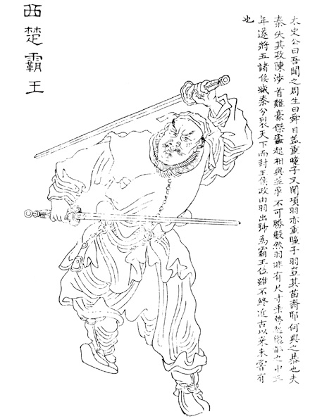
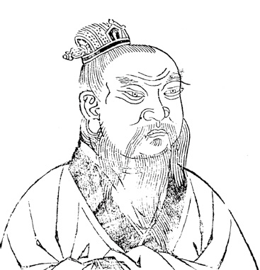
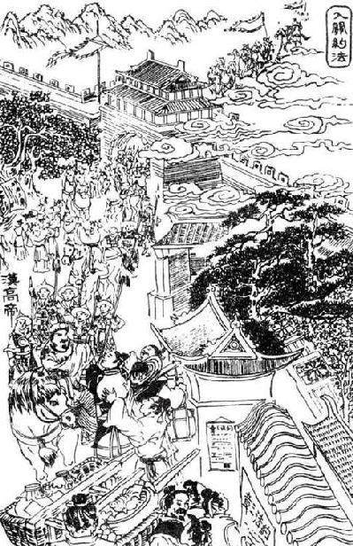

卷七 项羽本纪第七
本篇是西楚霸王项羽的本纪，记述了他一生的功过，涉及年代与《高祖本纪》多有重合，而记事更加详细，文字更加生动。尽管项羽没有称帝，却威震天下，分封诸侯，在秦汉之间承上启下，因此司马迁将他列入本纪。
项籍者，下相人也，字羽。初起时，年二十四。其季父【季父：叔父。】 项梁，梁父即楚将项燕，为秦将王翦所戮者也。项氏世世为楚将，封于项，故姓项氏。项籍少时，学书不成，去学剑，又不成。项梁怒之。籍曰：“书足以记名姓而已。剑一人敌，不足学，学万人敌。”于是项梁乃教籍兵法，籍大喜，略知其意，又不肯竟学。项梁尝有栎阳逮，乃请蕲狱掾曹咎书抵栎阳狱掾司马欣，以故【以故：因此。】 事得已。项梁杀人，与籍避仇于吴中。吴中贤士大夫皆出项梁下。每吴中有大繇役及丧，项梁常为主办，阴以兵法部勒宾客及子弟，以是知其能。秦始皇帝游会稽，渡浙江，梁与籍俱观。籍曰：“彼可取而代也。”梁掩其口，曰：“毋妄言，族矣！”梁以此奇籍。籍长八尺余，力能扛鼎，才气过人，虽吴中子弟皆已惮籍矣。
项籍是下相人，字羽。他刚起兵的时候只有二十四岁。他的叔父名叫项梁，项梁的父亲就是楚将项燕，被秦将王翦杀死的那个人。项氏世代担任楚将，被封在项邑，因此姓项氏。项籍年少的时候，学写字不成，去学击剑，又没学成。项梁对他很生气。项籍说：“写字可以记姓名就足够了。击剑只能与一个人搏斗，这些都不值得学，我想学与一万人对抗的。”于是项梁就教项籍兵法，项籍十分高兴，大致了解兵法的主旨后，又不愿意学完。项梁曾经在栎阳被通缉，就请蕲县狱掾曹咎写信给栎阳狱掾司马欣，因此事情得以了结。项梁杀人，和项籍到吴中躲避仇家。吴中贤能的士大夫都比不上项梁。每当吴中有大规模的徭役和丧事的时候，经常由项梁主持办理，他暗中用兵法部署调度宾客和子弟，所以能够了解他们的才能。秦始皇帝巡游会稽，渡过浙江，项梁和项籍一同前去观看。项籍说：“我可以取代他。”项梁捂住他的嘴，说：“不许乱说，否则就要灭族了！”项梁因此觉得项籍非同寻常。项籍身高八尺有余，很有力气，能够举起大鼎，他的才能勇气超过常人，就连吴中子弟也都畏惧他了。
秦二世元年七月，陈涉等起大泽中。其九月，会稽守通谓梁曰：“江西皆反，此亦天亡秦之时也。吾闻先即制人，后则为人所制。吾欲发兵，使公及桓楚将。”是时桓楚亡在泽中。梁曰：“桓楚亡，人莫知其处，独籍知之耳。”梁乃出，诫籍持剑居外待。梁复入，与守坐，曰：“请召籍，使受命召桓楚。”守曰：“诺。”梁召籍入。须臾，梁眴shùn【眴：使眼色。】 籍曰：“可行矣！”于是籍遂拔剑斩守头。项梁持守头，佩其印绶。门下大惊，扰乱，籍所击杀数十百人。一府中皆慑伏，莫敢起。梁乃召故所知豪吏，谕以所为起大事，遂举吴中兵。使人收下县，得精兵八千人。梁部署吴中豪杰为校尉、候、司马。有一人不得用，自言于梁。梁曰：“前时某丧使公主某事，不能办，以此不任用公。”众乃皆伏。于是梁为会稽守，籍为裨将，徇下县。
秦二世元年（前209年）七月的时候，陈涉等人在大泽乡起事。当年九月，会稽郡守殷通对项梁说：“长江以西地区都造反了，这也是上天要灭亡秦朝的时机。我听说先行动就能控制别人，后行动则被别人所控制。我想要发兵，请您和桓楚带领。”当时桓楚逃亡到泽中。项梁说：“桓楚逃亡在外，没有人知道他的下落，只有项籍知道罢了。”项梁走出来，告诉项籍拿着剑在外面等候。项梁又走进去，与郡守坐在一起，说：“请召见项籍，让他接受命令召回桓楚。”郡守说：“好。”项梁召唤项籍进来。没过多久，项梁对项籍使眼色说：“可以行动了！”于是项籍就拔出剑砍下郡守的头。项梁拿着郡守的头，身佩他的官印。门下的侍从大惊，陷入混乱，项籍杀死了几十上百人。全府的人都被项籍所震慑，没有人敢反抗。项梁于是召集原来他所认识的有权势的官吏，告知他们所要做的大事，于是他调发吴中的士兵。他派人收编会稽郡下辖各县的士卒，得到精锐士兵八千人。项梁安排吴中的豪杰担任校尉、军候、司马。有一个人没有得到任用，亲自去对项梁说。项梁说：“前不久有一件丧事让您主办，您没有能力办好，所以没有任用您。”众人于是都很佩服项梁。这时项梁担任会稽郡守，项籍为裨将，攻取下辖各县。
广陵人召shào平于是为陈王【陈王：陈胜。】 徇广陵，未能下。闻陈王败走，秦兵又且至，乃渡江矫陈王命，拜梁为楚王上柱国。曰：“江东已定，急引兵西击秦。”项梁乃以八千人渡江而西。闻陈婴已下东阳，使使欲与连和俱西。陈婴者，故东阳令史，居县中，素信谨，称为长者。东阳少年杀其令，相聚数千人，欲置长，无适用，乃请陈婴。婴谢不能，遂强立婴为长，县中从者得二万人。少年欲立婴便为王，异军苍头特起。陈婴母谓婴曰：“自我为汝家妇，未尝闻汝先古之有贵者。今暴得大名，不祥。不如有所属，事成犹得封侯，事败易以亡，非世所指名也。”婴乃不敢为王。谓其军吏曰：“项氏世世将家，有名于楚。今欲举大事，将非其人，不可。我倚名族，亡秦必矣。”于是众从其言，以兵属项梁。项梁渡淮，黥布、蒲将军亦以兵属焉。凡六七万人，军下邳。
广陵人召平当时为陈王攻取广陵，没有能够攻下。他听说陈王战败逃跑，秦兵又快要赶到了，就渡过长江假传陈王的命令，任命项梁为楚王的上柱国。召平说：“江东已经平定，赶快带兵西进攻打秦军。”项梁就派八千人渡过长江向西进发。他听说陈婴已经攻下东阳，就派使者想要与陈婴联合西进。陈婴这个人，原来是东阳令史，居住在县里，向来诚实谨慎，被称为忠厚之人。东阳少年杀死了他们的县令，相互聚集起几千人，想要选一个首领，没有找到合适的人，就请陈婴来做首领。陈婴推辞却又无法拒绝，就被迫成为首领，县里追随他的人有二万人。少年想要推举陈婴称王，独树一帜以青巾裹头。陈婴的母亲对陈婴说：“自从我做了你家的媳妇，从来没听说过你的祖先有谁地位显赫。现在你突然得到显赫的名号，不是好兆头。不如归附别人，事成还可以封侯，失败也容易逃脱，不会被世人指名道姓。”陈婴于是不敢称王。他对军吏说：“项氏世代为将领，在楚地非常有声望。现在想要做大事，没有称职的将领，是不行的。我们依靠名门大族，一定能让秦朝灭亡了。”于是众人都听从他的话，率领军队归附项梁。项梁渡过淮水，黥布、蒲将军也率领军队归附。项梁的军队一共有六七万人，驻扎在下邳。
当是时，秦嘉已立景驹为楚王，军彭城东，欲距项梁。项梁谓军吏曰：“陈王先首事，战不利，未闻所在。今秦嘉倍陈王而立景驹，逆无道。”乃进兵击秦嘉。秦嘉军败走，追之至胡陵。嘉还战一日，嘉死，军降。景驹走死梁地。项梁已并秦嘉军，军胡陵，将引军而西。章邯军至栗，项梁使别将朱鸡石、余樊君与战。余樊君死。朱鸡石军败，亡走胡陵。项梁乃引兵入薛，诛鸡石。项梁前使项羽别攻襄城，襄城坚守不下。已拔，皆坑【坑：同“坑”，坑杀。】 之，还报项梁。项梁闻陈王定死，召诸别将会薛计事。此时沛公亦起沛，往焉。
居鄛cháo人范增，年七十，素居家，好奇计，往说项梁曰：“陈胜败固当。夫秦灭六国，楚最无罪。自怀王入秦不反，楚人怜之至今，故楚南公曰‘楚虽三户，亡秦必楚’也。今陈胜首事，不立楚后而自立，其势不长。今君起江东，楚蜂午【蜂午：蜂起，纷然并起。】 之将皆争附君者，以君世世楚将，为能复立楚之后也。”于是项梁然其言，乃求楚怀王孙心【楚怀王孙心：楚怀王熊槐三十年（前299年）与秦昭襄王会盟被劫持，三年后死在秦国，当时其少子公子兰也已成年，而且距熊心被立为楚王有近百年之久，所以熊心与楚怀王不太可能只相隔两代，但一定是其嫡系后裔。】 民间，为人牧羊，立以为楚怀王，从民所望也。陈婴为楚上柱国，封五县，与怀王都盱xū台yí。项梁自号为武信君。

霸王项羽，选自清代上官周绘《晚笑堂画传》。
在这个时候，秦嘉已经立景驹为楚王，驻扎在彭城以东，想要与项梁相对抗。项梁对军吏说：“陈王首先起事，作战不利，下落不明。现在秦嘉背叛陈王而立景驹为王，这是大逆不道的举动。”项梁于是带兵攻打秦嘉。秦嘉的军队战败逃跑，项梁追击到胡陵。秦嘉回军交战一天，秦嘉战死，士兵投降。景驹逃到梁地死去。项梁已经兼并了秦嘉的军队，驻扎在胡陵，将要率领军队西进。章邯的军队到达栗县，项梁派别将朱鸡石、余樊君与他交战。余樊君战死。朱鸡石的军队战败，逃到胡陵。项梁于是带兵进入薛县，处死朱鸡石。项梁此前派项羽率领另一支军队攻打襄城，襄城坚守不能攻下。项羽攻下襄城，将城中军民全部坑杀，返回报告项梁。项梁听说陈王确实死了，召集各路将领到薛县议事。这时沛公也在沛县起兵，前往薛县。
居鄛人范增，当时已经七十岁了，一直住在家里，喜好奇谋，前去劝项梁说：“陈胜的败亡本来就是注定的。秦国灭掉六国，楚国是最无辜的。自从怀王去秦国没有返回，楚人至今还很同情他。因此楚南公说‘楚国即使只剩三户人家，灭掉秦国的也一定是楚国人’。现在陈胜首先起事，不立楚国后裔却自立为王，他的势头一定不会持久。现在您在江东起兵，楚地将领纷然并起，都争相归附您，正是因为项氏世代担任楚将，认为您能够再立楚国后裔为王。”这时项梁认为范增的话很有道理，就在民间找到楚怀王的后代熊心，他正在给人放羊，项梁立他为楚怀王，顺从人民的愿望。陈婴担任楚国的上柱国，封地为五个县，和怀王在盱台建都。项梁自称为武信君。
居数月，引兵攻亢父，与齐田荣、司马龙且军救东阿，大破秦军于东阿。田荣即引兵归，逐其王假。假亡走楚。假相田角亡走赵。角弟田间故齐将，居赵不敢归。田荣立田儋子巿为齐王。项梁已破东阿下军，遂追秦军。数使使趣齐兵，欲与俱西。田荣曰：“楚杀田假，赵杀田角、田间，乃发兵。”项梁曰：“田假为与国【与国：盟国。】 之王，穷来从我，不忍杀之。”赵亦不杀田角、田间以市于齐。齐遂不肯发兵助楚。项梁使沛公及项羽别攻城阳，屠之。西破秦军濮阳东，秦兵收入濮阳。沛公、项羽乃攻定陶。定陶未下，去，西略地至雍yōng丘，大破秦军，斩李由。还攻外黄，外黄未下。
过了几个月，项梁领兵攻打亢父，与齐将田荣、司马龙且的军队援救东阿，在东阿大败秦军。田荣当时领兵返回，驱逐齐王田假。田假逃到楚国。田假的相国田角逃到赵国。田角的弟弟田间原本是齐将，留在赵国不敢回去。田荣立田儋的儿子田巿为齐王。项梁已经打败东阿地区的秦军，于是追击秦军。他多次派使者到齐国，想要让齐军与自己一同西进。田荣说：“如果楚国杀死田假，赵国杀死田角、田间，我就出兵。”项梁说：“田假是盟国的王，困窘时来投靠我国，我不忍心杀死他。”赵国也不杀田角、田间，以此与齐国做交易。齐国始终不肯发兵帮助楚国。项梁派沛公和项羽率领另外一支军队攻打城阳，屠戮那里。楚军向西在濮阳以东打败秦军，秦军收兵退到濮阳城内。沛公、项羽于是攻打定陶。定陶还没有攻下，楚军就离开了，向西攻取土地，到达雍丘，大败秦军，斩杀李由。回军攻打外黄，没有攻下。
项梁起东阿，西，比至定陶，再破秦军，项羽等又斩李由，益轻秦，有骄色。宋义乃谏项梁曰：“战胜而将骄卒惰者败。今卒少惰矣，秦兵日益，臣为君畏之。”项梁弗听。乃使宋义使于齐。道遇齐使者高陵君显，曰：“公将见武信君乎？”曰：“然。”曰：“臣论武信君军必败。公徐行即免死，疾行则及祸。”秦果悉起兵益章邯，击楚军，大破之定陶，项梁死。沛公、项羽去外黄攻陈留，陈留坚守不能下。沛公、项羽相与谋曰：“今项梁军破，士卒恐。”乃与吕臣军俱引兵而东。吕臣军彭城东，项羽军彭城西，沛公军砀。
章邯hán已破项梁军，则以为楚地兵不足忧，乃渡河击赵，大破之。当此时，赵歇为王，陈余为将，张耳为相，皆走入钜鹿城。章邯令王离、涉间围钜鹿，章邯军其南，筑甬道【甬道：两旁有遮蔽物的信道。】 而输之粟。陈余为将，将卒数万人而军钜鹿之北，此所谓河北之军也。
楚兵已破于定陶，怀王恐，从盱台之彭城，并项羽、吕臣军自将之。以吕臣为司徒，以其父吕青为令尹。以沛公为砀郡长，封为武安侯，将砀郡兵。
项梁在东阿发兵，向西进军，临近定陶，再次打败秦军，项羽等人又斩杀了李由，使项梁越来越轻敌，露出骄傲的神色。宋义于是劝谏项梁说：“打了胜仗而将领和士兵骄傲懈怠的军队一定会失败。现在士兵有些懈怠了，秦兵一天比一天多，我为您感到担心。”项梁不听。他就派宋义出使齐国。宋义在路上遇到齐国使者高陵君田显，说：“您要去见武信君吗？”高陵君说：“是的。”宋义说：“我认为武信君的军队一定会失败。您慢些去就能避免一死，走得太快则大难临头。”秦国果然发动全部兵力增援章邯，攻打楚军，在定陶大破楚军，项梁战死。沛公、项羽离开外黄攻打陈留，陈留坚守不能攻下。沛公、项羽相互商量说：“现在项梁的军队已经被打败，士兵恐慌。”于是他们和吕臣的军队一起领兵向东进发。吕臣驻扎在彭城以东，项羽驻扎在彭城以西，沛公驻扎在砀县。
章邯击败项梁的军队以后，就认为楚地的士兵不值得忧虑，于是渡过黄河去攻打赵国，大破赵军。在这个时候，赵歇是赵王，陈余是将军，张耳是相国，都逃进钜鹿城。章邯命令王离、涉间围攻钜鹿，章邯驻扎在钜鹿以南，修筑甬道而运输粮食。陈余担任将军率领几万人而驻扎在钜鹿以北，这就是人们所说的河北之军。
楚军在定陶被打败以后，楚怀王很恐慌，从盱台来到彭城，合并项羽、吕臣的军队亲自率领。他任命吕臣为司徒，任命吕臣的父亲吕青为令尹。他又任命沛公为砀郡长，封为武安侯，率领砀郡的士兵。
初，宋义所遇齐使者高陵君显在楚军，见楚王曰：“宋义论武信君之军必败，居数日，军果败。兵未战而先见败征，此可谓知兵矣。”王召宋义与计事，而大说之，因置以为上将军，项羽为鲁公，为次将，范增为末将，救赵。诸别将皆属宋义，号为卿子冠军。行至安阳，留四十六日不进。项羽曰：“吾闻秦军围赵王钜鹿，疾引兵渡河，楚击其外，赵应其内，破秦军必矣。”宋义曰：“不然。夫搏牛之虻不可以破虮jǐ虱shī。今秦攻赵，战胜则兵罢，我承其敝；不胜，则我引兵鼓行而西，必举秦矣。故不如先斗秦、赵。夫被坚执锐，义不如公；坐而运策，公不如义。”因下令军中曰：“勐如虎，很【很：违逆，执拗。】 如羊，贪如狼，强不可使者，皆斩之！”乃遣其子宋襄相齐，身送之至无盐，饮酒高会。天寒大雨，士卒冻饥。项羽曰：“将戮力【戮力：合力，并力。】 而攻秦，久留不行。今岁饥民贫，士卒食芋菽shū，军无见粮，乃饮酒高会，不引兵渡河因赵食，与赵并力攻秦，乃曰‘承其敝’。夫以秦之强，攻新造之赵，其势必举赵。赵举而秦强，何敝之承！且国兵新破，王坐不安席，埽sào境内而专属于将军，国家安危，在此一举。今不恤士卒而徇其私，非社稷之臣。”项羽晨朝上将军宋义，即其帐中斩宋义头，出令军中曰：“宋义与齐谋反楚，楚王阴令羽诛之。”当是时，诸将皆慑服，莫敢枝梧【枝梧：抗拒。】 。皆曰：“首立楚者，将军家也。今将军诛乱。”乃相与共立羽为假上将军。使人追宋义子，及之齐，杀之。使桓楚报命于怀王。怀王因使项羽为上将军，当阳君、蒲将军皆属项羽。
当初，宋义所遇到的齐国使者高陵君田显在楚国军中，见到楚怀王说：“宋义认为武信君的军队一定会失败，过了几天，他的军队果然失败了。军队还没有作战却预先见识失败的征兆，这可以说是精通兵法了。”楚怀王召见宋义与他议事，因而非常赏识他，就任命他为上将军，项羽为鲁公，担任次将，范增担任末将，前去援救赵国。各路将领都隶属于宋义，宋义号称卿子冠军。大军行进到安阳，停留四十六天没有前进。项羽说：“我听说秦军把赵王围困在钜鹿，应该赶快渡河，楚军在外面进攻，赵军在里面响应，就一定能打败秦军了。”宋义说：“不是这样。可以叮咬牛的虻却不能对付虮虱。现在秦军攻打赵军，取胜也会全军疲惫，我们可以利用对方的弱点；秦军不能取胜，我们就领兵击鼓西进，就一定能够灭掉秦国了。因此不如先让秦、赵两军相斗。身披甲胄，手执利器，冲锋杀敌，我不如您；静观形势，谋划策略，您不如我。”宋义于是向军中下令说：“像虎一样凶猛，像羊一样执拗，像狼一样贪婪，倔强不听从指挥的人，一律斩首！”宋义于是派他的儿子宋襄去辅助齐国，亲自送他到无盐，设酒宴大会宾客。当时天气寒冷下大雨，士兵受冻挨饿。项羽说：“将要合力攻打秦军，却长时间停留在这里不前进。现在遇到饥荒，百姓贫困，士卒只能吃芋头和豆子，军中没有存粮，宋将军却设酒宴大会宾客，不领兵渡河在赵国寻找食物，和赵军合力攻打秦军，却说‘利用对方的弱点’。凭借秦国的强大，进攻刚创建的赵国，一定会灭掉赵国。赵国被灭掉而秦国变强大，还有什么弱点可以利用呢！况且我国的军队刚被打败，怀王坐不安稳，将国内全部兵力都交给宋将军，国家的安危，就在这一战。现在他不体恤士兵，却谋取私利，不是国家的忠臣。”项羽在清晨拜见上将军宋义，就在上将军的帐幕中砍下宋义的头，走出来向军中下令说：“宋义和齐国谋划反对楚国，楚怀王暗中命令我诛杀他。”在这个时候，众将领都被震慑，没有人敢抗拒。众人都说：“创建楚国的，是将军一家。现在将军诛杀了叛乱之人。”将士共同推举项羽为代理上将军。项羽派人追赶宋义的儿子，追到齐国，将他杀死。项羽派桓楚向怀王报告。怀王就任命项羽为上将军，当阳君、蒲将军都隶属于项羽。
项羽已杀卿子冠军，威震楚国，名闻诸侯。乃遣当阳君、蒲将军将卒二万渡河，救钜鹿。战少利，陈余复请兵。项羽乃悉引兵渡河，皆沉船，破釜甑zèng【釜甑：煮炊食物的器具。】 ，烧庐舍，持三日粮，以示士卒必死，无一还心。于是至则围王离，与秦军遇，九战，绝其甬道，大破之，杀苏角，虏王离。涉间不降楚，自烧杀。
陈仁锡：“白起杀降，后世兵家者流亦恶之。秦亡之亟，起与有力焉。籍方欲诛无道秦，乃坑降卒至二十余万，其斩刈之惨，复一秦耳，何以慰斯民之望哉！”杨慎：“将飞者翼伏，将奋者足跼，将噬者爪缩。惟鸿门之不争，故垓下莫能与之争。”
当是时，楚兵冠诸侯。诸侯军救钜鹿下者十余壁，莫敢纵兵。及楚击秦，诸将皆从壁上观。楚战士无不一以当十，楚兵呼声动天，诸侯军无不人人惴恐。于是已破秦军，项羽召见诸侯将，入辕门【辕门：将帅军营的大门。】 ，无不膝行而前，莫敢仰视。项羽由是始为诸侯上将军，诸侯皆属焉。
项羽杀死卿子冠军以后，声威震慑楚国，名望传遍诸侯。他就派当阳君、蒲将军率领士兵二万人渡过黄河，援救钜鹿。取得一些胜利，陈余又向项羽请求援兵。项羽就率领全军渡河，他们凿沉船只，砸破炊具，烧毁营舍，携带三天的口粮，以此表示要拼死决战，没有活着回来的打算。于是军队刚到就围住了王离，与秦军相遇，九次交战，截断对方的甬道，大破敌军，杀死苏角，俘获王离。涉间不向楚军投降，自焚而死。
在这个时候，楚军勇冠诸侯。诸侯派兵援救钜鹿的有十几处营寨，没有人敢轻易出战。等到楚军攻打秦军的时候，各路将领都站在营垒上观望。楚军战士都以一敌十，楚兵的呐喊声震撼天际，诸侯军中没有人不胆战心惊。于是楚军打败秦军以后，项羽召见诸侯将领，进入辕门的时候，都跪在地上爬行，没有人敢仰视项羽。项羽从此开始成为诸侯联军的上将军，诸侯都听命于他。
章邯军棘原，项羽军漳南，相持未战。秦军数却，二世使人让章邯。章邯恐，使长史欣请事。至咸阳，留司马门【司马门：皇宫的外门。】 三日，赵高不见，有不信之心。长史欣恐，还走其军，不敢出故道。赵高果使人追之，不及。欣至军，报曰：“赵高用事于中，下无可为者。今战能胜，高必疾妒吾功；战不能胜，不免于死。愿将军孰计之。”陈余亦遗章邯书曰：“白起为秦将，南征鄢、郢，北坑马服【马服：指赵括。赵奢封马服君，其子赵括袭爵。】 ，攻城略地，不可胜计，而竟赐死。蒙恬为秦将，北逐戎人，开榆中地数千里，竟斩阳周。何者？功多，秦不能尽封，因以法诛之。今将军为秦将三岁矣，所亡失以十万数，而诸侯并起滋益多。彼赵高素谀日久，今事急，亦恐二世诛之，故欲以法诛将军以塞责【塞责：敷衍，推卸责任。】 ，使人更代将军以脱其祸。夫将军居外久，多内却【内却：内部的仇怨。】 ，有功亦诛，无功亦诛。且天之亡秦，无愚智皆知之。今将军内不能直谏，外为亡国将，孤特独立而欲常存，岂不哀哉！将军何不还兵与诸侯为从，约共攻秦，分王其地，南面称孤？此孰与身伏斧质，妻子为僇lù乎？”章邯狐疑【狐疑：犹豫。】 ，阴使候始成使项羽，欲约。约未成，项羽使蒲将军日夜引兵度三户，军漳南，与秦战，再破之。项羽悉引兵击秦军污水上，大破之。
章邯的军队驻扎在棘原，项羽的军队驻扎在漳水以南，两军对峙，还没有交战。秦军多次退却，二世派人责备章邯。章邯很害怕，派长史司马欣向朝廷请示。来到咸阳，司马欣停留在司马门三天，赵高不接见他，有不信任的意思。长史司马欣很害怕，逃回军中，不敢走原路。赵高果然派人去追赶他，没有追上。司马欣回到军中，向章邯报告说：“赵高在朝中当政，下面没有人敢擅自行动。现在作战能够取胜，赵高一定会嫉妒我们的功劳；作战不能够取胜，一定免不了一死。希望将军仔细考虑。”陈余也写信给章邯说：“白起担任秦将，向南征讨鄢、郢，向北坑杀马服君，攻城略地，战功不可计数，可是最后被赐一死。蒙恬担任秦将，向北驱逐戎狄，开辟榆中几千里的疆土，最后在阳周被斩杀。这是为什么呢？因为他们功劳太多，秦国不能封赏，就论罪诛杀他们。现在将军担任秦将三年了，所损失的士兵数以十万计，而诸侯同时起兵，并且越来越多。那个赵高平时借助谄媚当权很久了，现在形势危急，他也担心二世诛杀他，所以想要论罪诛杀将军来推卸责任，派人取代将军来摆脱灾祸。将军在外征战的时间太久，与朝中的人多有仇怨，有功会被诛杀，无功也会被诛杀。况且上天将要灭亡秦国，无论是愚钝的人还是聪明的人都知道这个道理。现在将军在内不能直言进谏，在外是个亡国之将，孤立无援却想要长久存活，难道不可悲吗！将军为什么不回军与诸侯联合，相约共同攻打秦国，分割秦国的土地称王，面向南方称孤道寡？这与自己俯身被诛，妻儿惨遭屠戮相比，哪个更好呢？”章邯犹豫不决，暗中派军候始成出使项羽军中，想要约定反秦。盟约还没有缔结，项羽就派蒲将军日夜兼程领兵渡过三户津，驻扎在漳水以南，与秦军交战，再次打败秦军。项羽率领全军将士在污水进攻秦军，大破秦军。
章邯使人见项羽，欲约。项羽召军吏谋曰：“粮少，欲听其约。”军吏皆曰：“善。”项羽乃与期【期：约定日期。】 洹水南殷虚上。已盟，章邯见项羽而流涕，为言赵高。项羽乃立章邯为雍王，置楚军中。使长史欣为上将军，将秦军为前行。
到新安，诸侯吏卒异时故繇使屯戍过秦中，秦中吏卒遇之多无状【无状：没有礼貌。】 ，及秦军降诸侯，诸侯吏卒乘胜多奴虏使之，轻折辱秦吏卒。秦吏卒多窃言曰：“章将军等诈吾属降诸侯，今能入关破秦，大善；即不能，诸侯虏吾属而东，秦必尽诛吾父母妻子。”诸将微闻其计，以告项羽。项羽乃召黥布、蒲将军计曰：“秦吏卒尚众，其心不服，至关中不听，事必危，不如击杀之，而独与章邯、长史欣、都尉翳入秦。”于是楚军夜击坑秦卒二十余万人新安城南。
凌稚隆：“先入关者王之，怀王之约也。沛公先定关中，则当王关中。增乃劝羽杀之，目无怀王矣。他日羽之行弑，增未必不与谋也。”
章邯派人去见项羽，想要缔结盟约。项羽召集军吏商量说：“军中粮少，我想要批准与他们缔结盟约。”军吏都说：“好。”项羽就与章邯约定日期在洹水以南的殷虚见面。缔结盟约以后，章邯见到项羽而流下眼泪，对他说赵高的坏话。项羽就立章邯为雍王，将他安置在楚国的军中。项羽任命长史司马欣为上将军，率领秦军在前面行进。
到达新安时，诸侯将士过去曾经服徭役或屯戍边疆而路过秦地，秦地官兵对他们大多很无礼，等到秦军投降诸侯，诸侯将士大多借着战胜的机会像对待奴隶和俘虏一样役使他们，随意羞辱秦军官兵。秦军官兵大多在私下议论说：“章将军等人欺骗我们投降诸侯，现在能够入关攻破秦国，当然很好；假如不能，诸侯俘虏我们到东方，秦国一定会将我们的父母妻儿全部处死。”各路将领们隐约听说了这些议论，报告项羽。项羽于是召来黥布、蒲将军谋划说：“秦军官兵人数众多，他们心里不服，到达关中还是不听号令，情况就危险了，不如出击杀掉他们，而只与章邯、长史司马欣、都尉董翳进入秦地。”于是楚军在夜里在新安城南将秦军降卒二十多万人全部坑杀。
行略定秦地。函谷关有兵守关，不得入。又闻沛公已破咸阳，项羽大怒，使当阳君等击关。项羽遂入，至于戏西。沛公军霸上，未得与项羽相见。沛公左司马曹无伤使人言于项羽曰：“沛公欲王关中，使子婴为相，珍宝尽有之。”项羽大怒，曰：“旦日飨士卒，为击破沛公军！”当是时，项羽兵四十万，在新丰鸿门，沛公兵十万，在霸上。范增说项羽曰：“沛公居山东时，贪于财货，好美姬。今入关，财物无所取，妇女无所幸，此其志不在小。吾令人望其气【望其气：观看云气预测吉凶的一种方术。】 ，皆为龙虎，成五采，此天子气也。急击勿失。”
诸侯进军攻取秦地。函谷关有重兵把守，军队不能进去。项羽又听说沛公已经攻破咸阳，非常生气，派当阳君等人攻打函谷关。项羽于是进入关中，来到戏水以西。沛公驻扎在霸上，没能和项羽相见。沛公的左司马曹无伤派人对项羽说：“沛公想要在关中称王，任命子婴为相国，把全部奇珍异宝据为己有。”项羽非常生气，说：“明天早晨犒劳士兵，为了打败沛公的军队！”在这个时候，项羽的士兵有四十万人，驻扎在新丰鸿门，沛公的士兵只有十万人，驻扎在霸上。范增劝项羽说：“沛公在山东的时候，贪图财货，喜爱美女。现在进入关中，不收取财物，不亲近妇女，由此看来他的志向一定不小。我命人观望他头上的云气，都是龙虎之形，呈现五种颜色，这是天子的云气。赶快进攻，不要失去机会。”
楚左尹项伯者，项羽季父也，素善留侯【留侯：张良在汉朝创建以后的封号。】 张良。张良是时从沛公，项伯乃夜驰之沛公军，私见张良，具告以事，欲呼张良与俱去。曰：“毋从俱死也。”张良曰：“臣为韩王【韩王：韩成，最后被项羽所杀。】 送沛公，沛公今事有急，亡去不义，不可不语。”良乃入，具告沛公。沛公大惊，曰：“为之奈何？”张良曰：“谁为大王为此计者？”曰：“鲰zōu生【鲰生：肤浅之人。】 说我曰：‘距关，毋内诸侯，秦地可尽王也。’故听之。”良曰：“料大王士卒足以当项王【项王：此时项羽尚未称王。】 乎？”沛公默然，曰：“固不如也，且为之奈何？”张良曰：“请往谓项伯，言沛公不敢背项王也。”沛公曰：“君安与项伯有故？”张良曰：“秦时与臣游，项伯杀人，臣活之。今事有急，故幸来告良。”沛公曰“孰与君少长？”良曰：“长于臣。”沛公曰：“君为我呼入，吾得兄事之。”张良出，要项伯。项伯即入见沛公。沛公奉卮酒为寿，约为婚姻，曰：“吾入关，秋毫不敢有所近，籍吏民，封府库，而待将军。所以遣将守关者，备他盗之出入与非常也。日夜望将军至，岂敢反乎！原伯【伯：据《高祖功臣侯者年表》，项伯名缠，伯是字。古人在社交场合互称其字以示尊敬，直呼其名则为不敬。】 具言臣之不敢倍德也。”项伯许诺，谓沛公曰：“旦日不可不蚤自来谢项王。”沛公曰：“诺。”于是项伯复夜去，至军中，具以沛公言报项王，因言曰：“沛公不先破关中，公岂敢入乎？今人有大功而击之，不义也，不如因善遇之。”项王许诺。
楚国左尹项伯，是项羽的叔父，他和留侯张良一向关系很好。张良当时跟随沛公，项伯就在夜里骑马到沛公的军中，私下会见张良，把情况全部告知，想要叫张良和他一起离开。项伯说：“不要跟他们一起死。”张良说：“我为韩王护送沛公，沛公现在有急难，我逃走是不仁义的，不能不告诉他。”张良于是进去，把情况全部告知沛公。沛公大惊，说：“怎么办呢？”张良说：“谁给大王出的这个主意？”沛公说：“一个小人劝我说：‘拒守函谷关，不要放诸侯进来，就可以在完全占有秦地而称王。’因此我听信了他的话。”张良说：“大王估计自己的士兵能够抵挡项王吗？”沛公沉默片刻，说：“当然不能抵挡，那又能怎么办呢？”张良说：“请让我去告诉项伯，就说沛公不敢背叛项王。”沛公说：“您怎么会与项伯有交情呢？”张良说：“秦朝的时候，项伯和我有交往，他杀了人，我救了他一命。现在情况危急，所以幸亏他来告诉我。”沛公说：“项伯与您相比，谁的年纪大？”张良说：“他比我年纪大。”沛公说：“您替我把他叫进来，我要以兄长的礼节待他。”张良出去，邀请项伯。项伯就进去见沛公。沛公捧着酒杯祝福项伯长寿，相约为儿女亲家，说：“我进入关中，财物分毫不敢接受，将官吏民众登记在册，封存府库，并且等待将军的到来。我派将领把守关隘的原因，是为了防备别的盗贼出入以及发生意外。我从早到晚盼望将军到来，怎么敢反叛呢！请项伯兄向将军详细说明我不敢背弃恩德。”项伯答应了，对沛公说：“明天不能不早点过来亲自向项王道歉。”沛公说：“好。”于是项伯又连夜离去，回到军中，把沛公的话全部报知项王，随即对他说：“沛公不先攻破关中，您怎么能轻易进来呢？现在人家立下大功却要攻打他，是不道义的，不如趁机善待他。”项王答应了。
沛公旦日从百余骑来见项王，至鸿门，谢曰：“臣与将军戮力而攻秦，将军战河北，臣战河南，然不自意能先入关破秦，得复见将军于此。今者有小人之言，令将军与臣有隙【隙：裂痕，引申为矛盾。】 。”项王曰：“此沛公左司马曹无伤言之，不然，籍何以至此？”项王即日因留沛公与饮。项王、项伯东乡xiàng【乡：同“向”。】 坐。亚父南乡坐。亚父者，范增也。沛公北乡坐，张良西乡侍。范增数目项王，举所佩玉玦【玉玦：有缺口的玉环，表示决绝。】 以示之者三，项王默然不应。范增起，出召项庄，谓曰：“君王为人不忍，若【若：代词，你。】 入前为寿，寿毕，请以剑舞，因击沛公于坐，杀之。不者，若属皆且为所虏。”庄则入为寿，寿毕，曰：“君王与沛公饮，军中无以为乐，请以剑舞。”项王曰：“诺。”项庄拔剑起舞，项伯亦拔剑起舞，常以身翼蔽沛公，庄不得击。
陈仁锡：“人臣之义无私交，项伯不忠，为子房用，因为沛公用，以致养虎遗患，蹙灭项氏，罪无容逭矣。然虽项伯之卖国，亦由羽之疏慢其亲臣，而沛公之能得人心也。”又曰：“项伯之贰于羽，以羽之王章邯也。项梁，羽季父，伯亦羽季父。邯杀梁而羽王邯，伯之心始寒矣。纪首曰：‘项氏世世为楚将，封于项，故姓项氏。’末云‘皆项氏，赐姓刘氏’，罪项王也，罪项王之堕其宗也。”
沛公在第二天带领一百多骑兵来见项王，到达鸿门，谢罪说：“我和将军合力而攻打秦国，将军在河北作战，我在河南作战，然而我自己也没想到能够先入关打败秦军，得以在这里再次见到将军。现在有小人进谗言，使将军和我产生矛盾。”项王说：“这是沛公的左司马曹无伤说的，不是这样的话，我怎么会来到这里？”项王当天就留下沛公一同宴饮。项王、项伯朝东而坐。亚父朝南而坐。亚父，就是范增。沛公朝北而坐，张良朝西陪坐。范增多次对项王使眼色，多次举起自己所佩戴的玉玦向项王示意，项王沉默不回应。范增起身，出去找来项庄，对他说：“君王为人不够狠心，你进去上前敬酒，敬酒之后，请求舞剑，趁机袭击座位上的沛公，把他杀死。不这样的话，你们都将被他所擒获。”项庄就进去敬酒，敬酒之后，说：“君王和沛公饮酒，军中没有什么可以取乐，请让我舞剑。”项王说：“好。”项庄拔剑起舞，项伯也拔剑起舞，总是用身体保护沛公，项庄没有机会袭击沛公。
于是张良至军门，见樊哙kuài。樊哙曰：“今日之事何如？”良曰：“甚急。今者项庄拔剑舞，其意常在沛公也。”哙曰：“此迫矣，臣请入，与之同命！”哙即带剑拥盾入军门。交戟之卫士欲止不内，樊哙侧其盾以撞，卫士仆地，哙遂入，披帷西乡立，瞋chēn目【瞋目：瞪眼。】 视项王，头发上指，目眦尽裂。项王按剑而跽【跽：双膝跪地，上身挺直。古人席地而坐，臀部坐在小腿上。“跽”指半起身，可以拱手表示敬意。项羽“按剑而趿”，是表示警惕，随时可以起身格斗。】 曰：“客何为者？”张良曰：“沛公之参乘【参乘：陪乘的人。古代乘车，御者居中，尊者在左，参乘在右。】 樊哙者也。”项王曰：“壮士，赐之卮酒。”则与斗卮酒。哙拜谢，起，立而饮之。项王曰：“赐之彘zhì肩【彘肩：猪前腿。】 。”则与一生彘肩。樊哙覆其盾于地，加彘肩上，拔剑切而啖dàn之。项王曰：“壮士，能复饮乎？”樊哙曰：“臣死且不避，卮酒安足辞！夫秦王有虎狼之心，杀人如不能举，刑人如恐不胜，天下皆叛之。怀王与诸将约曰‘先破秦入咸阳者王之。’今沛公先破秦入咸阳，毫毛不敢有所近，封闭宫室，还军霸上，以待大王来。故遣将守关者，备他盗出入与非常也。劳苦而功高如此，未有封侯之赏，而听细说，欲诛有功之人。此亡秦之续耳，窃为大王不取也。”项王未有以应，曰：“坐。”樊哙从良坐。坐须臾，沛公起如厕，因招樊哙出。
这时张良来到军门，见到樊哙。樊哙说：“今天的情况怎么样？”张良说：“非常危急。现在项庄拔剑起舞，用意在于刺杀沛公。”樊哙说：“这太紧急了，请让我进去，与他们拼命！”樊哙立即带剑持盾进入军门。交戟守门的卫士想要阻拦不让他进去，樊哙侧过他的盾撞过去，卫士倒在地上，樊哙于是进入大帐，他揭开帷幕朝西站立，瞪着眼睛看着项王，头发向上竖起，眼眶都要破裂了。项王立即伸手握住宝剑，挺直了上身说：“客人是干什么的？”张良说：“这是沛公的参乘樊哙。”项王说：“壮士，赐给他一杯酒。”侍卫就给他盛满一斗酒的大杯。樊哙拜谢后，起身，站着一饮而尽。项王说：“赐给他猪腿。”侍卫就给一只生猪腿。樊哙将盾放倒在地上，把猪腿放在盾上，拔出剑来切肉吃。项王说：“壮士，还能再饮酒吗？”樊哙说：“我连死都不怕，又怎么会拒绝一杯酒呢！那秦王有虎狼之心，杀人就像担心杀不尽一样，用刑就像担心不够重一样，天下人都背叛了他。怀王和众将领约定说：‘先打败秦军进入咸阳的人就可以在关中称王。’现在沛公率先打败秦军进入咸阳，财物分毫不敢接受，还封闭宫室，回到霸上驻扎，以此等待大王到来。派将士把守关口的原因，是防备别的盗贼出入和发生意外。像这样劳苦而功高，不但没有封侯的奖赏，而且听信闲言碎语，想要诛杀有功的人。这只是在重走灭亡的秦朝的老路罢了，我私下里认为大王的做法不可取。”项王不能回应，只是说：“请坐。”樊哙在张良旁边坐下。坐了不久，沛公起身上厕所，顺便叫樊哙出来。
沛公已出，项王使都尉陈平召沛公。沛公曰：“今者出，未辞也，为之奈何？”樊哙曰：“大行不顾细谨，大礼不辞小让。如今人方为刀俎【刀俎：刀和砧板。】 ，我为鱼肉，何辞为？”于是遂去。乃令张良留谢。良问曰：“大王【大王：刘邦当时也尚未称王。】 来何操？”曰：“我持白璧一双，欲献项王，玉斗一双，欲与亚父，会其怒，不敢献。公为我献之。”张良曰：“谨诺。”当是时，项王军在鸿门下，沛公军在霸上，相去四十里。沛公则置车骑，脱身独骑，与樊哙、夏侯婴、靳强、纪信等四人持剑盾步走，从郦山下，道芷阳间行。沛公谓张良曰：“从此道至吾军，不过二十里耳。度我至军中，公乃入。”沛公已去，间至军中。张良入谢，曰：“沛公不胜杯杓sháo，不能辞。谨使臣良奉白璧一双，再拜献大王足下【足下：对上级的尊称，后来多用于称呼同辈。】 ；玉斗一双，再拜奉大将军【大将军：指范增。】 足下。”项王曰：“沛公安在？”良曰：“闻大王有意督过之，脱身独去，已至军矣。”项王则受璧，置之坐上。亚父受玉斗，置之地，拔剑撞而破之，曰：“唉！竖子【竖子：奴仆，多用于骂人。】 不足与谋。夺项王天下者，必沛公也，吾属今为之虏矣。”沛公至军，立诛杀曹无伤。
沛公出去以后，项王派都尉陈平叫沛公回来。沛公说：“我们现在出去，没有辞行，怎么办呢？”樊哙说：“做大事就不要顾及小的礼数，持大节就不要回避小的责备。现在别人是刀和砧板，我们是待宰割的鱼和肉，还告辞做什么？”于是离去。沛公临走时命令张良留下道歉。张良问道：“大王来时带了什么？”沛公说：“我带来一双白璧，想献给项王，一双玉斗，想送给亚父，正赶上他们生气，没敢进献。您替我献给他们。”张良说：“遵命。”在这个时候，项王的军队在鸿门下，沛公的军队在霸上，距离四十里。沛公则丢下车骑，独自骑马逃脱，樊哙、夏侯婴、靳强、纪信等四人带剑持盾跑步，从郦山下，经芷阳走小路。沛公对张良说：“从这条路到我的军营，只有二十里路罢了。估计我已经回到军中，您再进去。”沛公离去以后，走小路回到军中。张良进去道歉，说：“沛公不胜酒力，不能亲自辞行。特意让我奉上白璧一双，拜献大王；玉斗一双，拜送大将军。”项王说：“沛公在哪里？”张良说：“听说大王有责备他的意思，就独自脱身而去，现在已经回到军中了。”项王则接过玉璧，放在坐席上。亚父接过玉斗，扔在地上，拔剑将其砍碎，说：“唉！这小子不足以谋大事。夺取项王天下的，一定是沛公，我们都要被他俘虏了。”沛公回到军中，立刻诛杀曹无伤。
居数日，项羽引兵西屠咸阳，杀秦降王子婴，烧秦宫室，火三月不灭，收其货宝妇女而东。人或说项王曰：“关中阻山河四塞，地肥饶，可都以霸。”项王见秦宫室皆以烧残破，又心怀思欲东归，曰：“富贵不归故乡，如衣绣夜行，谁知之者！”说者曰：“人言楚人沐猴【沐猴：猕猴。】 而冠耳，果然。”项王闻之，烹【烹：用大锅煮人的酷刑。】 说者。
项王使人致命怀王。怀王曰：“如约。”乃尊怀王为义帝。项王欲自王，先王诸将相。谓曰：“天下初发难时，假立诸侯后以伐秦。然身被坚执锐首事，暴露于野三年，灭秦定天下者，皆将相诸君与籍之力也。义帝虽【虽：仅，只。】 无功，故当分其地而王之。”诸将皆曰：“善。”乃分天下，立诸将为侯王。
项王、范增疑沛公之有天下，业已讲解，又恶负约，恐诸侯叛之，乃阴谋曰：“巴、蜀道险，秦之迁人皆居蜀。”乃曰：“巴、蜀亦关中地也。”故立沛公为汉王，王巴、蜀、汉中，都南郑。而三分关中，王秦降将以距塞汉王。
过了几天，项羽领兵西进屠戮咸阳，杀死已经投降的秦王子婴，烧毁秦朝的宫室，大火三个月都没有熄灭，并且收缴财宝、劫掠妇女向东而去。有人劝阻项王说：“关中有群山和黄河为险阻，四面都是关塞，土地肥沃富饶，可以定都来创建霸业。”项王看见秦朝的宫室都被烧得残破不堪，心中又思念故乡而想要回到东方，就说：“得到富贵却不回到故乡，就像穿着绣花的衣服在夜里走路，有谁会知道呢！”劝项王的人说：“人们都说楚国人只是猕猴戴帽子罢了，真是这样。”项王听到这句话，将这个人烹杀。
项王派人向怀王请示。怀王说：“按照约定办。”项羽于是尊怀王为义帝。项王想自己称王，就先分封众将相。他对众人说：“天下人刚开始起事的时候，暂时拥立诸侯的后裔为王来讨伐秦朝。然而亲自身穿铠甲，手执利器，率先起事，三年来风餐露宿，消灭秦朝平定天下，依靠的都是各位将相和我的力量。只是义帝没有功劳，所以应当分出他的土地封给各位为王。”众将领都说：“好。”项王于是分封天下，立众将领为王侯。
项王、范增怀疑沛公有夺取天下的想法，却已经与他和解，又不想违背约定，担心诸侯背叛他，就在暗中商量说：“巴、蜀道路艰险，被秦朝贬谪的罪人都居住在蜀地。”于是说：“巴、蜀也是关中地区。”所以项羽封沛公为汉王，统治巴、蜀、汉中三个郡，定都南郑。而把关中一分为三，封给秦朝的降将来阻挡汉王。
项王乃立章邯为雍王，王咸阳以西，都废丘。长史欣者，故为栎阳狱掾yuàn，尝有德于项梁。都尉董翳者，本劝章邯降楚。故立司马欣为塞王，王咸阳以东至河，都栎阳。立董翳为翟王，王上郡，都高奴。徙魏王豹为西魏王，王河东，都平阳。瑕丘申阳者，张耳嬖臣也，先下河南，迎楚河上，故立申阳为河南王，都雒阳。韩王成因故都，都阳翟。赵将司马卬áng定河内，数有功，故立卬为殷王，王河内，都朝歌。徙赵王歇为代王。赵相张耳素贤，又从入关，故立耳为常山【常山：即恒山。《史记》避汉文帝刘恒讳，改恒为常。】 王，王赵地，都襄国。当阳君黥布为楚将，常冠军，故立布为九江王，都六。鄱【鄱：也作“番”。】 君吴芮率百越佐诸侯，又从入关，故立芮为衡山王，都邾zhū。义帝柱国共敖将兵击南郡，功多，因立敖为临江王，都江陵。徙燕王韩广为辽东王。燕将臧荼从楚救赵，因从入关，故立荼为燕王，都蓟jì。徙齐王田巿为胶东王。齐将田都从共救赵，因从入关，故立都为齐王，都临菑。故秦所灭齐王建孙田安，项羽方渡河救赵，田安下济北数城，引其兵降项羽，故立安为济北王，都博阳。田荣者，数负项梁，又不肯将兵从楚击秦，以故不封。成安君陈余弃将印去，不从入关，然素闻其贤，有功于赵，闻其在南皮，故因环封三县。番君将梅鋗xuān功多，故封十万户侯。项王自立为西楚霸王，王九郡，都彭城。
项王于是封章邯为雍王，统治咸阳以西，定都废丘。长史司马欣，以前担任过栎阳狱掾，曾经对项梁有恩德。都尉董翳，是最初劝说章邯投降楚国的人。因此项王封司马欣为塞王，统治咸阳以东到黄河边，定都栎阳。封董翳为翟王，统治上郡，定都高奴。改封魏王豹为西魏王，统治河东地区，定都平阳。瑕丘人申阳，是张耳的宠臣，先攻下河南，在黄河边迎接楚军，因此项王封申阳为河南王，定都雒阳。韩王成在旧都建国，定都阳翟。赵将司马卬平定河内，屡次创建战功，因此封为殷王，统治河内地区，定都朝歌。改封赵王歇为代王。赵相张耳向来贤能，又追随项王进入关中，因此封张耳为常山王，统治赵地，定都襄国。当阳君黥布担任楚将，经常勇冠全军，因此封黥布为九江王，定都六县。鄱君吴芮率领百越协助诸侯，又跟随项王进入关中，因此封吴芮为衡山王，定都邾县。义帝的柱国共敖率领士兵攻打南郡，创建很多战功，因此封共敖为临江王，定都江陵。改封燕王韩广为辽东王。燕将臧荼曾经追随楚军援救赵军，因而跟随项王进入关中，所以封臧荼为燕王，定都蓟县。改封齐王田巿为胶东王。齐将田都曾经跟随楚军共同援救赵国，因而跟随项王进入关中，所以封田都为齐王，定都临菑。过去被秦朝所灭掉的齐王建的孙子田安，在项羽渡河援救赵国的时候，攻下济水以北的几座城，带领他的军队投降项羽，因此封田安为济北王，定都博阳。田荣，多次辜负项梁，又不愿带领军队跟随楚军攻打秦军，所以不封。成安君陈余丢下将印离去，没有跟随项王进入关中，然而项王向来听说他很贤能，对赵国有功，听说他在南皮，因此顺便把南皮周边的三个县封给他。番君的将领梅鋗战功很多，因此封为十万户侯。项王自立为西楚霸王，统治九个郡，定都彭城。
汉之元年【汉之元年：刘邦称王建国而尚未即帝位，因此不称高祖元年。刘邦称帝在称王的第五年，也没有改元。】 四月，诸侯罢戏下【戏下：一说为麾下，一说为戏水边。】 ，各就国。项王出之国，使人徙义帝，曰：“古之帝者地方千里，必居上游。”乃使使徙义帝长沙郴chēn县。趣义帝行，其群臣稍稍背叛之，乃阴令衡山、临江王击杀之江中。韩王成无军功，项王不使之国，与俱至彭城，废以为侯，已又杀之。臧荼tú之国，因逐韩广之辽东，广弗听，荼击杀广无终，并王其地。
田荣闻项羽徙齐王巿fú胶东，而立齐将田都为齐王，乃大怒，不肯遣齐王之胶东，因以齐反，迎击田都。田都走楚。齐王巿畏项王，乃亡之胶东就国。田荣怒，追击杀之即墨。荣因自立为齐王，而西杀击济北王田安，并王三齐【三齐：齐、胶东、济北三郡。】 。荣与彭越将军印，令反梁地。陈余阴使张同、夏说说齐王田荣曰：“项羽为天下宰，不平。今尽王故王于丑地，而王其群臣诸将善地，逐其故主，赵王乃北居代，余以为不可。闻大王起兵，且不听不义，愿大王资余兵，请以击常山，以复赵王，请以国为扞hàn蔽。”齐王许之，因遣兵之赵。陈余悉发三县兵，与齐并力击常山，大破之。张耳走归汉。陈余迎故赵王歇于代，反之赵。赵王因立陈余为代王。
汉元年（前206年）四月，诸侯从戏下撤离，各自回到封国。项王也出关回到封国，派人迁徙义帝，说：“古时候的帝王拥有方圆千里的土地，一定要居住在上游。”于是他派使者将义帝迁往长沙郡的郴县。项王催促义帝早些动身，群臣逐渐产生了背叛之心，于是项王暗中命令衡山王、临江王在长江上杀死义帝。韩王成没有军功，项王不让他回到封国，带着他一起来到彭城，废为侯爵，不久又将他杀死。臧荼回到封国，趁机将韩广驱逐到辽东，韩广不服从，臧荼就在无终杀死韩广，吞并了他的封地。
田荣听说项羽改封齐王田巿为胶东王，而立齐将田都为齐王，于是非常生气，不想让齐王去胶东，趁机在齐国反叛，迎战田都。田都逃往楚国。齐王田巿惧怕项王，就逃到胶东的封国。田荣很生气，派兵追击，在即墨将他杀死。田荣因此自立为齐王，并且向西进攻杀死济北王田安，吞并三齐地区。田荣授予彭越将军印，让他在梁地反叛。陈余暗中派张同、夏说劝齐王田荣说：“项羽是天下的主宰，分封诸侯很不公平。现在将原来的六国之王都封在不好的地方，而将他的群臣诸将都封在好的地方，还驱逐他原来的君主，赵王于是居住在北方的代郡，我认为不能这样。我听说大王已经起兵，而且不服从不道义的命令，希望大王资助我军队，请让我攻打常山，恢复赵王的地位，请求将赵国作为齐国的屏障。”齐王答应了，顺势派兵去赵国。陈余调发三个县的全部士兵，与齐军合力攻打常山，大破常山军。张耳逃走归附汉王。陈余去代郡迎接原来的赵王歇，使他返回赵国。赵王顺势封陈余为代王。
是时，汉还定三秦【三秦：指雍、塞、翟三国。】 。项羽闻汉王皆已并关中，且东，齐、赵叛之，大怒。乃以故吴令郑昌为韩王，以距汉，令萧公角等击彭越。彭越败萧公角等，汉使张良徇韩，乃遗项王书曰：“汉王失职【失职：失去职权。】 ，欲得关中，如约即止，不敢东。”又以齐、梁反书遗项王曰：“齐欲与赵并灭楚。”楚以此故，无西意，而北击齐。征兵九江王布。布称疾不往，使将将数千人行。项王由此怨布也。
这个时候，汉王回军平定三秦地区。项羽听说汉王已经吞并整个关中地区，将要向东进发，齐、赵两国也背叛了他，感到非常生气。于是项羽封前吴县令郑昌为韩王，来阻挡汉军，命令萧公角等人攻打彭越。彭越打败萧公角等人，汉王派张良攻取韩地，张良就写信给项王说：“汉王失去了应得的官爵，想要得到关中，实现约定就会停止进军，不敢向东进军。”张良又将齐、梁两国的反叛文书送给项王说：“齐国想要联合赵国一起消灭楚国。”楚军因为这个缘故，没有向西进军的想法，反而向北攻打齐国。项王向九江王黥布徵调士兵。黥布称病不去，只派将领率几千人前去。项王由此开始怨恨黥布。
汉之二年冬，项羽遂北至城阳，田荣亦将兵会战。田荣不胜，走至平原，平原民杀之。遂北烧夷齐城郭室屋，皆坑田荣降卒，系虏其老弱妇女。徇齐至北海，多所残灭。齐人相聚而叛之。于是田荣弟田横收齐亡卒得数万人，反城阳。项王因留，连战未能下。
春，汉王部五诸侯兵，凡五十六万人，东伐楚。项王闻之，即令诸将击齐，而自以精兵三万人南从鲁出胡陵。四月，汉皆已入彭城，收其货宝美人，日置酒高会。项王乃西从萧，晨击汉军而东，至彭城，日中，大破汉军。汉军皆走，相随入谷、泗水，杀汉卒十余万人。汉卒皆南走山，楚又追击至灵璧东睢水上。汉军却，为楚所挤，多杀。汉卒十余万人皆入睢水，睢水为之不流。围汉王三匝zā。于是大风从西北而起，折木发屋，扬沙石，窈冥【窈冥：阴暗的样子。】 昼晦，逢迎楚军。楚军大乱，坏散，而汉王乃得与数十骑遁去。欲过沛，收家室而西。楚亦使人追之沛，取汉王家。家皆亡，不与汉王相见。汉王道逢得孝惠、鲁元，乃载行。楚骑追汉王，汉王急，推堕孝惠、鲁元车下，滕公【滕公：夏侯婴。】 常下收载之，如是者三。曰：“虽急，不可以驱，奈何弃之？”于是遂得脱。求太公、吕后不相遇。审食yì其jī从太公、吕后间行，求汉王，反遇楚军。楚军遂与归，报项王，项王常置军中。
汉二年（前205年）冬季，项羽向北行进到城阳，田荣也率领军队来到城阳与其交战。田荣不能取胜，逃到平原，平原的百姓将他杀死。项羽于是向北进军烧毁了齐国的城郭和住房，把田荣的降卒全部坑杀，掳掠齐国的老弱和妇女。楚军从齐国攻城略地到北海郡，所到之处大多被摧毁。齐国人聚集在一起反叛项羽。于是田荣的弟弟田横收拢齐军逃亡的士卒得到几万人，在城阳反叛。项王因此留下作战，连续交战几次也没有攻下城阳。
春季，汉王调遣五路诸侯的军队，共计五十六万人，一起向东讨伐楚国。项王听说后，立即命令众将领攻打齐国，而自己则率领精锐士兵三万人向南从鲁县越过胡陵。四月，汉军已经全部进入彭城，收缴和劫掠项羽的财宝和美女，每天设宴豪饮。项王向西经过萧县，在清晨攻打汉军向东进发，到达彭城，中午，大破汉军。汉军将士都逃跑了，相继逃入谷水、泗水，楚军杀死汉军士兵十多万人。汉军士兵都向南方的山里逃跑，楚军又追到灵壁以东的睢水边。汉军败退，受到楚军的逼迫，大多被杀死。汉军士兵十多万人都跌进睢水中，堵塞了睢水。楚军将汉王包围了三重。这时从西北刮起一阵大风，折断了树木，掀翻了住房，扬起了沙石，白天阴暗得像傍晚一样，狂风刮向楚军。楚军大乱，队形散乱，而汉王才得以和几十名骑兵逃出去。汉王想要途经沛县，带上家眷向西撤退。楚军也派人追到沛县，搶斷汉王的家眷。汉王的家眷都逃跑了，没有见到汉王。汉王在路上遇到孝惠帝、鲁元公主，就用车载着他们走。楚军的骑兵追赶汉王，汉王很着急，就将孝惠帝、鲁元公主推下车，滕公总是下车将他们重新抱上来，这样反复多次。滕公说：“事情虽然危急，无法让车走得更快，怎么能丢弃他们呢？”汉王终于得以逃脱。汉王寻找太公、吕后而没有找到。审食其与太公、吕后走小路，也在寻找汉王，反而遭遇楚军。楚军就带他们返回，报告项王，项王将他们一直留在军中。
是时吕后兄周吕侯【周吕侯：吕泽。】 ，为汉将兵居下邑，汉王间往从之，稍稍收其士卒。至荥阳，诸败军皆会，萧何亦发关中老弱未傅【未傅：未载入服役簿籍中的人。老弱者不必服役，年龄未满二十三岁为弱，超过五十六岁为老。】 ，悉诣荥阳，复大振。楚起于彭城，常乘胜逐北，与汉战荥阳南京、索间，汉败楚，楚以故不能过荥阳而西。
项王之救彭城，追汉王至荥阳，田横亦得收齐，立田荣子广为齐王。汉王之败彭城，诸侯皆复与楚而背汉。汉军荥阳，筑甬道属之河，以取敖仓粟。
这时吕后的兄长周吕侯，担任汉将驻扎在下邑，汉王走小路来到他的军营里，逐渐收拢逃散的士兵。来到荥阳，各路败军都聚集在一起，萧何也征发关中没有编入服役簿籍的老弱之人，全部送到荥阳，汉军的士气再次振奋。楚军从彭城出发，经常乘胜追击败兵，与汉军在荥阳以南的京、索两邑之间交战，汉军打败楚军，楚军因此无法越过荥阳向西挺进。
项王援救彭城时，追击汉王到荥阳，田横也趁机收复了齐国，立田荣的儿子田广为齐王。汉王在彭城战败时，诸侯又都投靠楚国而背叛汉国。汉军驻扎在荥阳，修筑甬道与黄河相连，来运送敖仓的粮食。
汉之三年，项王数侵夺汉甬道，汉王食乏，恐，请和，割荥阳以西为汉。项王欲听之。历阳侯范增曰：“汉易与耳，今释弗取，后必悔之。”项王乃与范增急围荥阳。汉王患之，乃用陈平计间项王。项王使者来，为太牢具【太牢具：猪、牛、羊齐备的盛宴。】 ，举欲进之。见使者，详惊愕曰：“吾以为亚父使者，乃反项王使者！”更持去，以恶食食项王使者。使者归报项王，项王乃疑范增与汉有私，稍夺之权。范增大怒，曰：“天下事大定矣，君王自为之。愿赐骸hái骨归卒伍【赐骸骨归卒伍：告老还乡为平民。官员献身国家，所以年老辞官称“赐骸骨”、“乞骸骨”，请求君主赐还枯骨以回乡安葬。古代编户以五户为“伍”，三百户为“卒”，“卒伍”代指乡里。】 。”项王许之。行未至彭城，疽发背而死。
陈仁锡：“固陵之追，籍已兵罢食尽，犹能大破汉军，则刘非项敌明矣。然未几而三将会兵，卒能破楚，则汉之用人与籍之自用，其相去何翅什伯？详书信、越、英布会兵之由，所以见汉之擒籍，卒赖此三人力也。”
汉三年（前204年），项王屡次侵扰汉军的甬道夺取粮食，汉王缺少粮食，感到害怕，请求和解，要求把荥阳以西割让给汉国。项王想要答应这个条件。历阳侯范增说：“汉军很容易对付了，现在放弃而不获取，以后一定会后悔。”项王就和范增勐攻荥阳。汉王为此担忧，就采用陈平的计策离间项王君臣。项王的使者到来，为他准备丰盛的饭食，准备好将要进献。送饭食的人看到使者，假装惊讶地说：“我以为是亚父的使者，竟然是项王的使者！”他就把饭食撤下去，换上粗劣的饭食给项王的使者吃。使者回来报告项王，项王于是怀疑范增与汉军私下勾结，逐渐剥夺了他的权力。范增十分生气，说：“天下的形势已经确定了，请君王好自为之。请求准许我告老还乡。”项王答应了。范增还没有走到彭城，就因背上长毒疮而死去。
汉将纪信说汉王曰：“事已急矣，请为王诳【诳：欺骗。】 楚为王，王可以间出。”于是汉王夜出女子荥阳东门被甲二千人，楚兵四面击之。纪信乘黄屋车，傅左纛dào【纛：帝王车马上的羽毛饰物。】 ，曰：“城中食尽，汉王降。”楚军皆呼万岁。汉王亦与数十骑从城西门出，走成皋gāo。项王见纪信，问：“汉王安在？”曰：“汉王已出矣。”项王烧杀纪信。
汉王使御史大夫周苛、枞公、魏豹守荥阳。周苛、枞公谋曰：“反国之王，难与守城。”乃共杀魏豹。楚下荥阳城，生得周苛。项王谓周苛曰：“为我将，我以公为上将军，封三万户。”周苛骂曰：“若不趣降汉，汉今虏若，若非汉敌也！”项王怒，烹周苛，并杀枞公。
汉王之出荥阳，南走宛、叶，得九江王布，行收兵，复入保成皋。
汉将纪信劝汉王说：“情况已经非常危急了，请让我假扮成大王去骗骗楚军，大王就可以趁机逃出去了。”于是汉王在夜里从荥阳东门放出两千名身披铠甲的女子，楚军从四面围攻她们。纪信乘坐有黄色伞盖的车子，左侧的马头上插着羽毛饰物，说：“城中的粮食吃光了，汉王出城投降。”楚军将士都高呼万岁。这时汉王和几十名骑兵从西门出城，逃往成皋。项王见到纪信，问他：“汉王在哪里？”纪信说：“汉王已经出城了。”项王烧死了纪信。
汉王派御史大夫周苛、枞公、魏豹驻守荥阳。周苛、枞公商议说：“魏豹是反叛之国的王，与他一起很难守住城池。”于是二人一起杀死了魏豹。楚军攻下荥阳城，活捉了周苛。项王对周苛说：“做我的将领，我任命您为上将军，封三万户食邑。”周苛大骂说：“你不赶快投降汉王，汉王就要俘虏你了，你不是汉王的对手！”项王很生气，烹杀周苛，一并杀死枞公。
汉王逃出荥阳以后，向南经过宛县、叶县，招降九江王黥布，一路上收拢逃散的士兵，再次进入成皋固守。
汉之四年，项王进兵围成皋。汉王逃，独与滕公出成皋北门，渡河走脩武，从张耳、韩信军。诸将稍稍得出成皋，从汉王。楚遂拔成皋，欲西。汉使兵距之巩，令其不得西。
是时，彭越渡河击楚东阿，杀楚将军薛公。项王乃自东击彭越。汉王得淮阴侯【淮阴侯：韩信在汉朝创建后的封号。】 兵，欲渡河南。郑忠说汉王，乃止壁河内。使刘贾将兵佐彭越，烧楚积聚。项王东击破之，走彭越。汉王则引兵渡河，复取成皋，军广武，就敖仓食。项王已定东海来，西，与汉俱临广武而军，相守数月。
当此时，彭越数反梁地，绝楚粮食，项王患之。为高俎【俎：一说为盛肉的四脚方盘，后来演化为砧板，一说为行军时装在车上用于了望的高台。】 ，置太公其上，告汉王曰：“今不急下，吾烹太公。”汉王曰：“吾与项羽俱北面受命怀王，曰‘约为兄弟’，吾翁即若翁，必欲烹而翁，则幸分我一杯羹。”项王怒，欲杀之。项伯曰：“天下事未可知，且为天下者不顾家，虽杀之无益，只益祸耳。”项王从之。
汉四年（前203年），项王进军围攻成皋。汉王逃走，独自一人与滕公出成皋北门，渡过黄河逃往脩武，来到张耳、韩信的军营。众将领陆续逃出成皋，前去追随汉王。楚军终于攻下成皋，想要向西进军。汉王派兵在巩县抗拒，使其无法西进。
这时，彭越渡过黄河在东阿攻打楚军，杀死了楚国的将军薛公。项王于是亲自向东攻打彭越。汉王得到淮阴侯的军队，想要渡过黄河南下。郑忠劝阻汉王，汉王才留在河内筑起营垒。汉王派刘贾率领军队协助彭越，烧毁楚军聚集的物资。项王向东打败汉军，彭越逃走了。汉王则率军渡过黄河，重新夺取成皋，驻扎在广武，吃敖仓的粮食。项王平定东海以后，向西进发，与汉军都在广武驻扎，两军相持几个月。
在这个时候，彭越在梁地多次反击楚军，切断了楚军运送粮食的路线，项王为此很担心。他准备好高俎，将太公放在上面，警告汉王说：“现在不赶快投降，我就烹杀太公。”汉王说：“我和你都面朝北方听命于怀王，说过‘结为兄弟’的话，我的父亲就是你的父亲，你一定要烹杀自己的父亲，就请分给我一杯肉羹。”项王很生气，想要烹杀太公。项伯说：“天下的形势还不明朗，况且打天下的人不会顾及家人，就算杀了他也没有好处，只会增添祸患罢了。”项王听从了项伯的劝告。
楚、汉久相持未决，丁壮苦军旅，老弱罢转漕。项王谓汉王曰：“天下匈匈【匈匈：纷乱的样子。】 数岁者，徒以吾两人耳，原与汉王挑战决雌雄，毋徒苦天下之民父子为也。”汉王笑谢曰：“吾宁斗智，不能斗力。”项王令壮士出挑战。汉有善骑射者楼烦，楚挑战三合，楼烦辄射杀之。项王大怒，乃自被甲持戟挑战。楼烦欲射之，项王瞋目叱之，楼烦目不敢视，手不敢发，遂走还入壁，不敢复出。汉王使人间问之，乃项王也。汉王大惊。于是项王乃即汉王相与临广武间jiàn【间：山涧。】 而语。汉王数之，项王怒，欲一战。汉王不听，项王伏弩射中汉王。汉王伤，走入成皋。
楚、汉两军长期相持不分胜负，丁壮为行军作战而劳苦，老弱因转运物资而疲惫。项王对汉王说：“天下纷乱多年，只是因为我们两个人罢了，我愿向汉王挑战来一决胜负，不要再让天下的百姓白受苦了。”汉王笑着推辞说：“我宁愿比智慧，也不会比力气。”项王命令壮士出去挑战。汉军有个擅长骑马射箭的人叫楼烦，楚军接连挑战三次，楼烦都把前来挑战的壮士射死了。项王非常生气，就亲自披上铠甲拿起长戟出来挑战。楼烦想要射击，项王瞪着眼睛呵叱，楼烦眼不敢正视，手不敢放箭，就跑进营垒，再也不敢出来了。汉王派人暗中打听，才知道是项王。汉王大惊。于是项王靠近汉王的军营，和他隔着广武涧谈话。汉王列举项王的罪状，项王很生气，想要决战。汉王不同意，项王军中埋伏好的弓弩手射中了汉王。汉王受伤，逃回成皋。
项王闻淮阴侯已举河北，破齐、赵，且欲击楚，乃使龙且往击之。淮阴侯与战，骑将灌婴击之，大破楚军，杀龙且。韩信因自立为齐王。项王闻龙且军破，则恐，使盱台人武涉往说淮阴侯。淮阴侯弗听。是时，彭越复反，下梁地，绝楚粮。项王乃谓海春侯大司马曹咎等曰：“谨守成皋，则汉欲挑战，慎勿与战，毋令得东而已。我十五日必诛彭越，定梁地，复从将军。”乃东，行击陈留、外黄。
外黄不下。数日，已降，项王怒，悉令男子年十五已上诣城东，欲坑之。外黄令舍人儿年十三，往说项王曰：“彭越强劫外黄，外黄恐，故且降，待大王。大王至，又皆坑之，百姓岂有归心？从此以东，梁地十余城皆恐，莫肯下矣。”项王然其言，乃赦外黄当坑者。东至睢阳，闻之皆争下项王。
项王听说淮阴侯已经攻下河北地区，打败齐、赵两国军队，并且想要攻打楚军，就派龙且前去迎战。淮阴侯与龙且交战，骑兵将领灌婴攻击龙且，大破楚军，杀死龙且。韩信趁机自立为齐王。项王听说龙且的军队被打败，感到害怕，派盱台人武涉前去劝说淮阴侯。淮阴侯不听从。这时，彭越再次反叛楚军，攻下梁地，断绝了楚军的粮道。项王就对海春侯大司马曹咎等人说：“谨慎地防守成皋，即使汉军想要挑战，也千万不要与其交战，只要不让他们向东进发就行了。我十五天以内一定会杀掉彭越，平定梁地，再回来与将军会合。”于是项王向东进军，一路上攻打陈留、外黄。
外黄不能攻下。过了几天，外黄终于投降，项王非常生气，命令将十五岁以上的男子全部送到城东，想要将他们坑杀。外黄县令门客的儿子只有十三岁，他前去劝项王说：“彭越武力强迫外黄和他反叛，外黄百姓都很害怕，所以暂时投降彭越，等待大王到来。现在大王到来，又要将他们全部坑杀，百姓怎么会有归顺的想法呢？从这里往东，梁地的十几座城都会感到害怕，再也没有肯投降的了。”项王认为他的话很有道理，就赦免了外黄在坑杀之列的人。楚军向东行进到睢阳，百姓听说后，都争相投降项王。
汉果数挑楚军战，楚军不出。使人辱之，五六日，大司马怒，渡兵汜水。士卒半渡，汉击之，大破楚军，尽得楚国货赂。大司马咎、长史翳、塞王欣【大司马咎、长史翳、塞王欣：塞王司马欣曾任长史，董翳曾任都尉，不应称长史。按《高祖本纪》《汉书》都没有“翳塞王”三字，可知在汜水自杀者为曹咎、司马欣二人，董翳不在其中。】 皆自刭汜水上。大司马咎者，故蕲狱掾，长史欣亦故栎阳狱吏，两人尝有德于项梁，是以项王信任之。当是时，项王在睢阳，闻海春侯军败，则引兵还。汉军方围钟离眛于荥阳东，项王至，汉军畏楚，尽走险阻。
是时，汉兵盛食多，项王兵罢食绝。汉遣陆贾说项王，请太公，项王弗听。汉王复使侯公往说项王，项王乃与汉约，中分天下，割鸿沟以西者为汉，鸿沟而东者为楚。项王许之，即归汉王父母妻子。军皆呼万岁。汉王乃封侯公为平国君，匿弗肯复见，曰：“此天下辩士，所居倾国，故号为平国君。”项王已约，乃引兵解而东归。
汉欲西归，张良、陈平说曰：“汉有天下太半，而诸侯皆附之。楚兵罢食尽，此天亡楚之时也，不如因其机而遂取之。今释弗击，此所谓‘养虎自遗患’也。”汉王听之。
汉军果然屡次向楚军挑战，楚军不出去交战。汉军派人在阵前辱骂，连续五六天，大司马非常生气，让士兵渡过汜水。士兵刚渡过一半，汉军发起进攻，大破楚军，缴获了楚军的全部物资。大司马曹咎、长史司马欣都在汜水边自刎而死。大司马曹咎，原本是蕲县狱掾，长史司马欣原本也是栎阳狱吏，两人曾经对项梁有恩德，所以项王信任他们。在这个时候，项王正在睢阳，听说海春侯的军队战败，就领兵返回。汉军正在荥阳围攻钟离眛，项王赶到，汉军害怕楚军，就全部撤到地势险峻之处了。
这时，汉军兵多粮足，项王兵疲粮绝。汉王派陆贾劝说项王，请求释放太公，项王不答应。汉王又派侯公前去劝说项王，项王就和汉王约定，平分天下，把鸿沟以西的土地划归汉国，鸿沟以东的土地属于楚国。项王同意了，立即送回汉王的父母妻儿。汉军都高呼万岁。汉王于是封侯公为平国君，让他躲藏起来不肯再见面，说：“这个人是天下善辩之士，他所到的国家会因他而倾覆，因此封号为平国君。”项王已经达成约定，就领兵撤退返回东方。
汉王想要向西撤回，张良、陈平劝他说：“汉国占有大半个天下，而且诸侯都归附了我们。楚国兵疲粮尽，这是上天灭亡楚国的时机，不如抓住这个机会而彻底消灭楚国。现在放走敌人不去攻打，这就是人们所说的‘养虎为患’。”汉王听从了他们的建议。
王世贞：“《垓下歌》正不必以虞兮为嫌悲壮呜咽，与《大风》各自描画帝王兴衰气象。千载而下，惟孟德‘山不厌高’、‘老骥伏枥’，仲达‘天地开辟，日月重光’语差可嗣响。”
汉五年，汉王乃追项王至阳夏南，止军，与淮阴侯韩信、建成侯彭越期会而击楚军。至固陵，而信、越之兵不会。楚击汉军，大破之。汉王复入壁，深堑而自守。谓张子房【张子房：张良，字子房。】 曰：“诸侯不从约，为之奈何？”对曰：“楚兵且破，信、越未有分地，其不至固宜。君王能与共分天下，今可立致也。即不能，事未可知也。君王能自陈以东傅海尽与韩信，睢阳以北至谷城以与彭越，使各自为战，则楚易败也。”汉王曰：“善。”于是乃发使者告韩信、彭越曰：“并力击楚。楚破，自陈以东傅海与齐王，睢阳以北至谷城与彭相国。”使者至，韩信、彭越皆报曰：“请今进兵。”韩信乃从齐往，刘贾军从寿春并行，屠城父，至垓下。大司马周殷叛楚，以舒屠六，举九江兵，随刘贾、彭越皆会垓下，诣项王。
汉五年（前202年），汉王追击项王到阳夏以南，军队停下驻扎，与淮阴侯韩信、建成侯彭越约定日期一起进攻楚军。大军行进到固陵，可是韩信、彭越的军队没有赶来会合。楚军攻打汉军，大破汉军。汉王又进入营垒，深挖堑壕固守不出。汉王对张子房说：“诸侯不遵守约定，怎么办呢？”张良回答说：“楚军就要失败了，韩信、彭越还没有得到封地，他们不来也是符合情理的。君王能和他们共分天下，现在他们立刻就会前来。假如不能这样做，以后的事情就不清楚了。君王能把从陈县以东到海边的土地都封给韩信，把从睢阳以北到谷城的土地都封给彭越，让他们各为自己的封地去作战，那么楚军就很容易打败了。”汉王说：“好。”于是他就派使者前去告诉韩信、彭越说：“我们合力攻打楚军。楚军被打败后，从陈县以东到海边的土地都封给齐王，从睢阳以北到谷城的土地都封给彭相国。”使者一到，韩信、彭越都回报说：“请让我们立刻进兵。”韩信于是从齐国出发，刘贾的军队从寿春出发，与其一起前进，屠戮城父，行进到垓下。大司马周殷反叛楚国，率领舒县的士兵屠戮六县，发动九江的士兵，跟随刘贾、彭越一起在垓下会合，来到项王阵前。
项王军壁垓下，兵少食尽，汉军及诸侯兵围之数重。夜闻汉军四面皆楚歌，项王乃大惊曰：“汉皆已得楚乎？是何楚人之多也？”项王则夜起，饮帐中。有美人名虞，常幸从；骏马名骓zhuī，常骑之。于是项王乃悲歌慷慨，自为诗曰：“力拔山兮气盖世，时不利兮骓不逝。骓不逝兮可奈何？虞兮虞兮奈若何！”歌数阕【阕：量词，歌曲一首或一段为一阕。】 ，美人和之。项王泣数行下，左右皆泣，莫能仰视。
项王的军队在垓下修筑营垒，兵少粮尽，汉军和诸侯的军队将其重重包围。夜晚听见四周的汉军都在唱楚地的歌曲，项王于是非常吃惊地说：“汉军已经占领整个楚国了吗？为什么楚国人这么多？”项王就在夜里起身，来到营帐中饮酒。有一个美人名叫虞姬，因为受宠而经常跟随项王行军；有一匹骏马名叫骓，项王经常骑着它作战。于是项王情绪激愤地唱起悲伤的歌，自己作诗吟唱道：“力能拔山啊，豪气盖世；时运不济啊，骓不能至。骓不能至啊，该怎么办？虞姬啊虞姬，该怎么办！”歌唱了几段，虞美人应和着。项王流下数行眼泪，身边的侍从都流下眼泪，没有人能抬起头来。
于是项王乃上马骑，麾下壮士骑从者八百余人，直夜溃围南出，驰走。平明，汉军乃觉之，令骑将灌婴以五千骑追之。项王渡淮，骑能属者百余人耳。项王至阴陵，迷失道，问一田父，田父绐dài【绐：欺骗。】 曰：“左。”左，乃陷大泽中。以故汉追及之。项王乃复引兵而东，至东城，乃有二十八骑。汉骑追者数千人。项王自度不得脱，谓其骑曰：“吾起兵至今八岁矣，身七十余战，所当者破，所击者服，未尝败北，遂霸有天下。然今卒困于此，此天之亡我，非战之罪也。今日固决死，愿为诸君快战，必三胜之，为诸君溃围，斩将，刈yì旗，令诸君知天亡我，非战之罪也。”乃分其骑以为四队，四乡。汉军围之数重。项王谓其骑曰：“吾为公取彼一将。”令四面骑驰下，期山东为三处。于是项王大呼驰下，汉军皆披靡，遂斩汉一将。是时，赤泉侯【赤泉侯：杨喜在杀死项羽后得到的封号。】 为骑将，追项王，项王瞋目而叱之，赤泉侯人马俱惊，辟易【辟易：躲避。】 数里。与其骑会为三处。汉军不知项王所在，乃分军为三，复围之。项王乃驰，复斩汉一都尉，杀数十百人，复聚其骑，亡其两骑耳。乃谓其骑曰：“何如？”骑皆伏曰：“如大王言。”
于是项王就骑上马，部下跟随他的精壮骑兵有八百多人，趁着夜色向南冲破包围圈，飞奔而去。天亮以后，汉军才发觉，命令骑兵将领灌婴率领五千名骑兵追击。项王渡过淮水，能够跟上的骑兵只有一百多人了。项王到达阴陵，迷失去了方向，询问一个农夫，农夫欺骗他说：“往左走。”项王向左逃去，却陷入一大片沼泽地。因为这个缘故汉军才追上他们。项王就又领兵向东逃去，到达东城，只剩下二十八名骑兵了。汉军前来追击的骑兵有几千人。项王估计自己不能脱身了，对他的骑兵说：“我起兵到现在已经八年了，亲身经历过七十多次战斗，抵挡我的都被打败，我进攻的全部臣服，还没有战败过，所以能够称霸天下。然而现在我被困在这里，这是上天想要我灭亡，并不是我作战时犯了错误。今天本来就要决一死战，希望为各位痛快地打一仗，一定会连胜三次，为各位冲破包围圈，斩杀敌将，砍倒敌旗，让各位知道是上天想要我灭亡，并不是我作战时犯了错误。”项王于是将他的骑兵分成四队，面朝四方。汉军将其重重包围。项王对他的骑兵说：“我为各位取来一个敌将的性命。”项王命令骑兵向四个方向冲出去，约定在山以东分三处会合。于是项王大声呐喊着冲了过去，所到之处的汉军全部倒下，终于斩杀一个汉军将领。这个时候，赤泉侯担任骑兵将领，追击项王，项王瞪着眼睛向他呵叱，赤泉侯连人带马都很震惊，退避了好几里。项王和他的骑兵在约定的三处会合。汉军不知道项王在哪里，就把军队一分为三，又将项王包围起来。项王于是骑马飞奔，又斩杀一个汉军的都尉，杀死了几十上百人，再把他的骑兵召集到一起，只死掉两名骑兵罢了。项王就对他的骑兵说：“怎么样？”骑兵都伏在地上说：“就像大王所说的一样。”
于是项王乃欲东渡乌江。乌江亭长舣船【舣船：把船靠岸。】 待，谓项王曰：“江东虽小，地方千里，众数十万人，亦足王也。愿大王急渡。今独臣有船，汉军至，无以渡。”项王笑曰：“天之亡我，我何渡为！且籍与江东子弟八千人渡江而西，今无一人还，纵江东父兄怜而王我，我何面目见之？纵彼不言，籍独不愧于心乎？”乃谓亭长曰：“吾知公长者。吾骑此马五岁，所当无敌，尝一日行千里，不忍杀之，以赐公。”乃令骑皆下马步行，持短兵接战。独籍所杀汉军数百人。项王身亦被十余创。顾见汉骑司马吕马童，曰：“若非吾故人乎？”马童面【面：通“偭”，背对。】 之，指王翳曰：“此项王也。”项王乃曰：“吾闻汉购【购：悬赏。】 我头千金、邑万户，吾为若德。”乃自刎而死。王翳取其头，余骑相蹂践争项王，相杀者数十人。最其后，郎中骑杨喜，骑司马吕马童，郎中吕胜、杨武，各得其一体。五人共会其体，皆是。故分其地为五：封吕马童为中水侯，封王翳为杜衍侯，封杨喜为赤泉侯，封杨武为吴防侯，封吕胜为涅niè阳侯。
项王已死，楚地皆降汉，独鲁不下。汉乃引天下兵欲屠之，为其守礼义，为主死节，乃持项王头视鲁，鲁父兄乃降。始，楚怀王初封项籍为鲁公，及其死，鲁最后下，故以鲁公礼葬项王谷城。汉王为发哀，泣之而去。
诸项氏枝属，汉王皆不诛。乃封项伯为射阳侯。桃侯、平皋侯、玄武侯皆项氏，赐姓刘。
于是项王想要向东渡过乌江。乌江亭长将船靠在岸边等待，对项王说：“江东虽然很小，但是土地也有方圆千里，民众也有几十万人，足以在那里称王。希望大王赶快渡江。现在只有我这一条船，汉军来到这里，也没有办法渡江。”项王笑着说：“上天要我灭亡，我渡江又能怎么样呢！况且我和江东子弟八千人渡江向西进军，现在没有一个人回来，即使江东的父兄可怜我，让我在那里称王，我又有什么脸面去见他们呢？即使他们不说什么，我自己难道心里不愧疚吗？”于是他对亭长说：“我知道您是个忠厚的人。我骑这匹马五年了，它所向无敌，曾经一天行进千里，我不忍心杀死它，把它赐给您了。”他命令骑兵都下马步行，手持短兵器迎战。项籍独自杀死汉军几百人。项王自己也受伤十多处。他回头看见汉军的骑司马吕马童，说：“你不是我的老朋友吗？”吕马童转过身，指给王翳说：“这就是项王。”项王于是说：“我听说汉王悬赏用一千金、一万户封邑来得到我的头，我成全你。”于是他自刎而死。王翳割下他的头，其他骑兵相互踩踏着争抢项王的尸体，自相残杀死了几十人。最后，郎中骑杨喜，骑司马吕马童，郎中吕胜、杨武，各自得到了项王的一部分肢体。五个人把肢体合起来，都是项王的。所以汉王把悬赏的封地一分为五：封吕马童为中水侯，封王翳为杜衍侯，封杨喜为赤泉侯，封杨武为吴防侯，封吕胜为涅阳侯。
项王死后，楚地都投降汉王，只有鲁县不投降。汉王于是率领天下军队想要屠戮鲁县，因为当地人持守礼义，愿意为君主守节而死，就派人拿出项王的头给鲁县的人看，鲁县的父兄才投降。最初，楚怀王封项籍为鲁公，等到他死后，鲁县又最后投降，因此用鲁公的礼仪将他埋葬在谷城。汉王为其致哀，哭泣后离去。
项氏的各支属，汉王都没有诛杀。汉王封项伯为射阳侯。桃侯、平皋侯、玄武侯都是项氏，赐姓刘。
太史公曰：吾闻之周生【周生：西汉儒生，其名不详。】 曰“舜目盖重瞳子【重瞳子：眼睛有两个瞳孔。】 ”，又闻项羽亦重瞳子。羽岂其苗裔邪？何兴之暴也？夫秦失其政，陈涉首难，豪杰蜂起，相与并争，不可胜数。然羽非有尺寸【非有尺寸：即使很小的封地也没有。】 ，乘势起陇亩【陇亩：田垄，代指民间。】 之中，三年，遂将五诸侯灭秦，分裂天下，而封王侯，政由羽出，号为“霸王”，位虽不终，近古以来未尝有也。及羽背关怀楚，放逐义帝而自立，怨王侯叛己，难矣。自矜功伐，奋其私智而不师古，谓霸王之业，欲以力征经营天下，五年卒亡其国，身死东城，尚不觉寤而不自责，过矣。乃引“天亡我，非用兵之罪也”，岂不谬哉！
太史公说：我听周生说“舜的眼睛大概有两个瞳孔”，又听说项羽也有两个瞳孔。项羽难道是舜的后裔吗？不然为什么会兴起得如此迅速呢？秦朝政治失策，陈涉率先起事，天下豪杰纷然响应，相互兼并争夺，不可胜数。然而项羽连很小的封地也没有，借助时势在民间发迹，三年后，就率领五路诸侯灭掉秦朝，分割天下，封立王侯，政令由他颁布，号称“霸王”，地位虽然没有保持到最后，但是近代以来也没有过这样的事情。等到项羽放弃关中思念楚地，放逐义帝自立为王，抱怨王侯背叛自己，情况已经很艰难了。项羽居功自傲，凭借个人才智而不仿效古法，认为自己创建了霸王基业，想要用武力治理天下，五年后就失去了他的国家，自己也死在东城，却还没有觉悟，不自我责备，这就是他的错了。他竟然说“上天想要我灭亡，不是我用兵时犯了错误”，难道不荒谬吗！
卷八 高祖本纪第八
吕思勉：“赤帝子之说，则又因高祖为沛公旗帜皆赤而附会，未必与行序有关。《史记》本纪言旗帜皆赤，由所杀蛇白帝子，杀者赤帝子，疑出后人增窜，非谈、迁原文也。”
本篇是汉高帝刘邦的本纪，记述了他一生的主要经历，尤其对他从出生到起兵时的种种异象作了渲染，以证明汉朝得天下的合法性。高帝的为人尽管颇受争议，不过他也算是一位乱世雄主。
高祖，沛丰邑中阳里人，姓刘氏，字季。父曰太公，母曰刘媪ǎo【父曰太公，母曰刘媪：太公、媪分别为对老年男女的敬称，并非刘邦父母之名。刘邦父母不参与政治活动，又因为避讳，所以文献中没有留下他们的名字。】 。其先刘媪尝息大泽之陂【陂：水边。】 ，梦与神遇。是时雷电晦冥，太公往视，则见蛟龙于其上。已而有身，遂产高祖。
高祖为人，隆准【隆准：高鼻梁。】 而龙颜【龙颜：额头丰满。】 ，美须髯rán，左股有七十二黑子。仁而爱人，喜施，意豁如也。常有大度，不事家人生产作业。及壮，试为吏，为泗水亭长，廷中吏无所不狎侮【狎侮：不庄重的亲近。】 。好酒及色。常从王媪、武负【武负：姓武的老妇。负，通“妇”。】 贳shì【贳：赊欠。】 酒，醉卧，武负、王媪见其上常有龙，怪之。高祖每酤gū留饮，酒雠【雠：出售。】 数倍。及见怪，岁竟，此两家常折券弃责zhài【责：同“债”。】 。
高祖常繇【繇：服徭役。】 咸阳，纵观，观秦皇帝，喟kuì然太息曰：“嗟乎，大丈夫当如此也！”
高祖是沛县丰邑中阳里人，姓刘氏，字季。他的父亲叫太公，母亲叫刘媪。早先刘媪曾在大湖的岸边休息，在梦里和水神相遇。当时电闪雷鸣，天色昏暗，太公前去察看，就发现一条蛟龙趴在刘媪身上。不久她就怀有身孕，于是生下了高祖。
高祖的相貌，有着挺拔的鼻梁和丰满的额头，留着漂亮的胡须，左大腿长着七十二颗黑痣。他仁厚爱人，喜欢施舍，胸襟广阔。他时常有远大的抱负，不愿从事普通百姓的生产劳作。等到壮年之时，被试用做过小吏，担任泗水亭长，廷中的官吏没有人不和他熟识。他喜好饮酒和女色。他经常到王媪、武负的酒肆赊酒，醉了就躺下，武负、王媪看到他的上方经常有一条龙，感到奇怪。高祖每次来到酒肆中喝酒，酒的销量都要比平时多出几倍。等到她们发觉了这些奇怪的现象，年终的时候，这两家酒肆经常毁掉债券免除他的酒钱。

汉高祖刘邦，选自《中国历代名人画像传》。
高祖斩白蛇，吴友如绘。
高祖曾经前往咸阳去服徭役，随意观看，见到秦始皇帝，就长叹一声说：“唉，大丈夫就应该是这个样子！”
单父人吕公善沛令，避仇从之客，因家沛焉。沛中豪桀吏闻令有重客，皆往贺。萧何为主吏，主进【进：接收客人进献的礼物。】 ，令诸大夫曰：“进不满千钱，坐之堂下。”高祖为亭长，素易【易：轻视。】 诸吏，乃绐【绐：欺骗。】 为谒【谒：拜访别人时所用的名帖，上面书写姓名等个人信息，以及拜访原因等说明文字，多为木片、竹片制成。】 曰“贺钱万”，实不持一钱。谒入，吕公大惊，起，迎之门。吕公者，好相人，见高祖状貌，因重敬之，引入坐。萧何曰：“刘季固多大言，少成事。”高祖因狎侮诸客，遂坐上坐，无所诎【诎：谦让。】 。酒阑【阑：尽，结束。】 ，吕公因目固留高祖。高祖竟酒，后。吕公曰：“臣少好相人，相人多矣，无如季相，愿季自爱。臣有息女【息女：亲生女儿。】 ，原为季箕帚妾。”酒罢，吕媪怒吕公曰：“公始常欲奇此女，与贵人。沛令善公，求之不与，何自妄许与刘季？”吕公曰：“此非儿女子所知也。”卒与刘季。吕公女乃吕后也，生孝惠帝、鲁元公主。
单父人吕公和沛县令关系很好，为躲避仇家而投奔县令做宾客，就迁居到沛县。沛县的豪杰和官吏听说县令家来了贵客，都前往道贺。萧何是主吏，负责接收礼物，他对各位贵客说：“进献的礼钱不到一千钱的，坐在堂下。”高祖担任亭长，一向看不起众官吏，就欺骗性地在名贴上写“贺礼一万钱”，实际上他没有带一个钱。名帖递进去后，吕公很惊讶，起身，到门口去迎接。吕公这个人，喜好为人相面，见到高祖的相貌，就非常敬重他，带他到堂上坐下。萧何说：“刘季向来爱说大话，很少做成事。”高祖因而戏弄堂上众宾客，就自己坐到上座，毫不谦让。酒席结束，吕公趁机使眼色要求高祖留下来。高祖喝完酒，故意最后走。吕公说：“我年轻的时候就喜好为人相面，看过的人也有很多了，没有像你刘季这样的，希望你能自重。我有个亲生女儿，愿意许配给你做个打扫屋子的妻妾。”酒席散后，吕媪生气地对吕公说：“您当初总是想让女儿与众不同，把她许配给贵人。沛县令对您很好，求娶女儿却不答应，为什么擅自把她许配给刘季？”吕公说：“这不是妇孺之辈所能够理解的。”最终他还是将女儿许配给了刘季。吕公的女儿就是吕后，生下了孝惠帝、鲁元公主。
高祖为亭长时，常告归之田。吕后与两子居田中耨nòu【耨：锄草。】 ，有一老父过请饮，吕后因餔【餔：请吃饭。】 之。老父相吕后曰：“夫人天下贵人。”令相两子。见孝惠，曰：“夫人所以贵者，乃此男也。”相鲁元，亦皆贵。老父已去，高祖适从旁舍来，吕后具言客有过，相我子母皆大贵。高祖问，曰：“未远。”乃追及，问老父。老父曰：“乡者【乡者：刚才。乡，同“向”。】 夫人婴儿皆似君，君相贵不可言。”高祖乃谢曰：“诚如父言，不敢忘德。”及高祖贵，遂不知老父处。
高祖做亭长时，经常请假回到田里。吕后和两个孩子在田里锄草，有一个老人路过讨水喝，于是吕后请他吃了一顿饭。老人为吕后相面说：“夫人是天下的贵人。”吕后让他为两个孩子相面。老人见到孝惠帝，说：“夫人能够富贵的原因，就在于这个孩子。”他为鲁元公主相面，也说是富贵之人。老人离开以后，高祖恰好从旁边的屋子过来，吕后就说有客人路过这里，为母子相面后说都是富贵之人。高祖就问老人在哪里，吕后说：“还没有走远。”高祖就追上去，询问老人。老人说：“刚才看过夫人和孩子的面相都像您一样富贵，您的面相富贵不可言说。”高祖就道谢说：“真的像老人家所说的那样，我绝不会忘记恩德。”等到高祖富贵以后，已经不知道老人在哪里了。
高祖为亭长，乃以竹皮为冠，令求盗【求盗：负责缉拿盗贼的亭卒。】 之薛治之，时时冠之，及贵常冠，所谓“刘氏冠”乃是也。
高祖以亭长为县送徒郦山，徒多道亡。自度比至皆亡之，到丰西泽中，止饮，夜乃解纵所送徒。曰：“公等皆去，吾亦从此逝矣！”徒中壮士愿从者十余人。高祖被酒，夜径泽中，令一人行前。行前者还报曰：“前有大蛇当径，愿还。”高祖醉，曰：“壮士行，何畏！”乃前，拔剑击斩蛇。蛇遂分为两，径开。行数里，醉，因卧。后人来至蛇所，有一老妪夜哭。人问何哭，妪曰：“人杀吾子，故哭之。”人曰：“妪子何为见杀？”妪曰：“吾子，白帝子也，化为蛇，当道，今为赤帝子斩之，故哭。”人乃以妪为不诚，欲告【告：因其不诚而告发，未免小题大做。《汉书·高帝纪》作“苦”，即让老妇吃点苦头，比较合理。《汉书·高帝纪》材料主要取自《史记·高祖本纪》，所以此处从《汉书》。】 之，妪因忽不见。后人至，高祖觉。后人告高祖，高祖乃心独喜，自负。诸从者日益畏之。
秦始皇帝常曰“东南有天子气”，于是因东游以厌【厌：镇压。】 之。高祖即自疑，亡匿，隐于芒砀dàng山泽岩石之间。吕后与人俱求，常得之。高祖怪问之。吕后曰：“季所居上常有云气，故从往常得季。”高祖心喜。沛中子弟或闻之，多欲附者矣。
高祖担任亭长，就用竹皮制作冠帽，命令求盗前往薛县制作，他经常戴在头上，等到富贵时也经常戴着，就是人们所说的“刘氏冠”。
顾颉刚：“在新的五德终始系统中，汉之不得不为火，正如在旧的系统中汉之不得不为土一样。黄龙见于成纪的符瑞，是公孙臣主张汉为土德之后才出现的。那么，神母夜号的符瑞，自然应当待刘向父子发明了汉为火德的主张之后才出现，可以无疑也。”
高祖担任亭长时为县里押送刑徒前往郦山，很多刑徒在路上逃走了。他心里估计到郦山时就都逃光了，走到丰邑的沼泽，停下来饮酒，在夜里把他所押送的刑徒全部释放。高祖说：“各位都走吧，从此以后我也不回去了！”刑徒里有十几个壮士愿意跟随他。高祖带着酒意，在夜里径直穿过沼泽，让一个人在前面探路。走在前面探路的人回来报告说：“前方有一条大蛇挡在路上，我想回去。”高祖喝醉了，说：“壮士走路，怕什么！”于是他上前，拔剑砍蛇。蛇就被砍成两段，道路通畅了。走了几里，高祖因为醉酒，就地躺下。后面的人走到大蛇出现的地方，见到一个老妇在夜里哭泣。人们就问她，老妇说：“有人杀死了我的儿子，因此我在这里哭。”人们就说：“老妇的儿子为什么被杀？”老妇说：“我的儿子，其实是白帝的儿子，变化为蛇，挡在路上，今天被赤帝的儿子砍为两段，因此我在这里哭。”人们都认为老妇不诚实，想要让她吃点苦头，老妇却忽然不见了。后面的人赶上来，高祖醒了。他们告诉高祖这些事，高祖心里暗自高兴，自以为了不起。众追随者越来越敬畏他。
秦始皇帝经常说“东南方有天子之气”，当时就巡游东方来镇压那里的天子之气。高祖怀疑和自己有关，就逃走藏匿起来，隐居在芒砀山的湖泽与岩石之间。吕后和别人一同寻找，总是能找到他。高祖感到奇怪而问吕后原因。吕后说：“你所在之处的上方总有云气聚集，所以跟着云气走就会找到你。”高祖心里很高兴。沛县的子弟有人听说了这件事，大多想要追随他。
秦二世元年秋，陈胜等起蕲qí，至陈而王，号为“张楚”。诸郡县皆多杀其长吏以应陈涉【陈涉：陈胜，字涉。】 。沛令恐，欲以沛应涉。掾【掾：曹参任狱掾，因此“掾”字应在“曹参”前。】 、主吏萧何、曹参乃曰：“君为秦吏，今欲背之，率沛子弟，恐不听。愿君召诸亡在外者，可得数百人，因劫众，众不敢不听。”乃令樊哙召刘季。刘季之众已数十百人矣。
于是樊哙从刘季来。沛令后悔，恐其有变，乃闭城城守，欲诛萧、曹。萧、曹恐，逾城保刘季。刘季乃书帛射城上，谓沛父老曰：“天下苦秦久矣。今父老虽为沛令守，诸侯并起，今屠沛。沛今共诛令，择子弟可立者立之，以应诸侯，则家室完。不然，父子俱屠，无为【无为：徒劳，指白送命。】 也。”父老乃率子弟共杀沛令，开城门迎刘季，欲以为沛令。刘季曰：“天下方扰，诸侯并起，今置将不善，壹败涂地。吾非敢自爱，恐能薄，不能完父兄子弟。此大事，愿更相推择可者。”萧、曹等皆文吏，自爱，恐事不就，后秦种族【种族：灭族。】 其家，尽让刘季。诸父老皆曰：“平生所闻刘季诸珍怪，当贵，且卜筮之，莫如刘季最吉。”于是刘季数让。众莫敢为，乃立季为沛公。祠黄帝、祭蚩尤于沛庭，而衅【衅：杀牲以血祭新制的器物。】 鼓旗，帜皆赤。由所杀蛇白帝子，杀者赤帝子，故上【上：同“尚”，崇尚。】 赤。于是少年豪吏如萧、曹、樊哙等皆为收沛子弟二三千人，攻胡陵、方与，还守丰。
秦二世元年（前209年）秋季，陈胜等人在蕲县起兵，来到陈县后自立为王，号称“张楚”。很多郡县的百姓杀死当地长官来响应陈涉。沛县令很害怕，想要在沛县起兵响应陈涉。主吏萧何、狱掾曹参于是说：“您担任秦朝的官吏，现在却想要背叛秦朝，率领沛县的子弟起兵，恐怕他们不会听从。希望您召回那些逃亡在外的人，能够得到几百人，利用他们来胁迫众人，众人不敢不听从。”于是县令就命令樊哙去召回刘季。刘季的部众已经有几十上百人了。
这时樊哙跟随刘季回来。沛县令后悔了，担心发生变故，就关闭城门防守，想要诛杀萧何、曹参。萧何、曹参很害怕，就翻越城墙投靠刘季自保。刘季在丝帛上写了一封信射入城中，告知沛县的父老说：“天下人深受秦朝暴政的折磨已经很久了。现在父老虽然为沛县令守城，但是诸侯都起兵反抗秦朝，就要屠戮沛县了。现在沛县的父老一起诛杀县令，选出可以担当首领的子弟推举他，来响应诸侯，身家性命才能保全。否则，父子都会被屠杀，那是白送命。”父老就率领子弟一起杀死了沛县令，打开城门迎进刘季，想要让他做沛县令。刘季说：“天下正陷入混乱，诸侯都起兵反抗秦朝，现在选出的将领不称职，就一败涂地了。我不敢吝惜自己的性命，只怕自己才能浅薄，不能保全父兄子弟的性命。这是大事，希望另选一位合适的人。”萧何、曹参等人都是文吏，吝惜自己的性命，害怕事情不成功，过后秦朝会将他们灭族，都推举刘季。众父老都说：“我们平时就常听说刘季的那些奇异之事，刘季必当得到富贵，况且经过占卜，没有人比刘季更吉利。”于是刘季多次谦让。众人都不敢担当，就推举刘季为沛公。众人在沛县官署的庭院祭祀黄帝、蚩尤，把牲畜的血涂在鼓旗上，旗帜都染成红色。由于所杀的蛇是白帝之子，杀蛇的人是赤帝之子，因此崇尚红色。这时沛县少年和有权势的官吏如萧何、曹参、樊哙等人都替沛公召集子弟，得到二三千人，一起攻打胡陵、方与，退守丰邑。
秦二世二年，陈涉之将周章军西至戏而还。燕、赵、齐、魏皆自立为王。项氏起吴。秦泗川监平【泗川监平：泗川郡御史，名叫平，其姓不详。御史监察一郡政务，因此又称监。据史学界对西安市北郊秦宫遗址出土的封泥研究得出结论，泗川郡应为四川郡，《汉书》更是讹为泗水郡。汉武帝元鼎四年（前113年）分东海郡三万户封刘商为泗水王，光武帝建武二年（26年）封刘歙为泗水王，刘歙死后废国设郡。可知四川与泗水不是同一郡。川、水二字篆、隶字体相近，可能是讹误的主要原因。】 将兵围丰，二日，出与战，破之。命雍齿守丰，引兵之薛。泗川守壮败于薛，走至戚。沛公左司马得泗川守壮，杀之。沛公还军亢父，至方与，未战。陈王使魏人周巿略地。周巿使人谓雍齿曰：“丰，故梁徙也。今魏地已定者数十城。齿今下魏，魏以齿为侯守丰。不下，且屠丰。”雍齿雅不欲属沛公，及魏招之，即反为魏守丰。沛公引兵攻丰，不能取。沛公病，还之沛。沛公怨雍齿与丰子弟叛之，闻东阳宁君、秦嘉立景驹为假王，在留，乃往从之，欲请兵以攻丰。是时秦将章邯从陈，别将司马 将兵北定楚地，屠相，至砀。东阳宁君、沛公引兵西，与战萧西，不利。还收兵聚留，引兵攻砀，三日乃取砀。因收砀兵，得五六千人。攻下邑，拔之。还军丰。闻项梁在薛，从骑百余往见之。项梁益沛公卒五千人，五大夫【五大夫：秦二十等爵的第九级。】 将十人。沛公还，引兵攻丰。
秦二世二年（前208年），陈涉的将领周章带领军队向西来到戏水后返回。燕、赵、齐、魏都自立为王。项氏在吴地起兵。秦朝泗川郡御史平率领士兵包围丰邑，过了两天，沛公出城与其交战，打败了秦军。沛公命令雍齿镇守丰邑，自己领兵前往薛县。泗川郡守壮在薛县被打败，逃往戚县。沛公的左司马擒获泗川郡守壮，将他杀死。沛公回军亢父，来到方与，没有作战。陈王派魏人周巿攻取土地。周巿派人对雍齿说：“丰邑，大梁人曾迁徙到这里。现在魏地已经平定几十座城邑。你雍齿投降魏王，魏王就会封你为侯来镇守丰邑。要是不投降，我就要屠戮丰邑。”雍齿向来不情愿跟随沛公，等到魏国招降他，立即反叛为魏国镇守丰邑。沛公领兵攻打丰邑，不能攻取。沛公生病了，返回沛县。沛公怨恨雍齿和丰邑的子弟背叛他，听说东阳宁君、秦嘉立景驹为代理楚王，在留县，就前去投靠他们，想要借兵去攻打丰邑。当时秦将章邯追击陈王，别将司马 率领士兵向北平定楚地，屠戮相县，来到砀县。东阳宁君、沛公领兵向西进发，与其在萧县以西交战，不能取胜。沛公回军收拢残兵聚集在留县，领兵攻打砀县，三天就攻占了砀县。他顺势收编了砀县的士兵，得到五六千人。攻打下邑，夺取那里。回军丰邑。沛公听说项梁在薛县，就带着一百多名骑兵前去见他。项梁增援士兵五千人给沛公，爵位为五大夫的将领有十人。沛公返回，领兵攻打丰邑。
从项梁月余，项羽已拔襄城还。项梁尽召别将居薛。闻陈王定死，因立楚后怀王孙心为楚王，治盱xū台yí。项梁号武信君。居数月，北攻亢父，救东阿，破秦军。齐军归，楚独追北，使沛公、项羽别攻城阳，屠之。军濮阳之东，与秦军战，破之。
秦军复振，守濮阳，环水【环水：掘开堤坝以水环城。】 。楚军去而攻定陶，定陶未下。沛公与项羽西略地至雍丘之下，与秦军战，大破之，斩李由。还攻外黄，外黄未下。
项梁再破秦军，有骄色。宋义谏，不听。秦益章邯兵，夜衔枚【衔枚：偷袭时衔木棍于口中，以防士兵说话。】 击项梁，大破之定陶，项梁死。沛公与项羽方攻陈留，闻项梁死，引兵与吕将军俱东。吕臣军彭城东，项羽军彭城西，沛公军砀。
章邯已破项梁军，则以为楚地兵不足忧，乃渡河，北击赵，大破之。当是之时，赵歇为王，秦将王离围之钜鹿城，此所谓河北之军也。
沛公跟随项梁一个多月，项羽已经攻下襄城返回了。项梁召集各路将领来到薛县。听到陈王的确死了，就立楚国后代楚怀王裔孙熊心为楚王，定都盱台。项梁自称武信君。过了几个月，楚军向北进攻亢父，援救东阿，打败秦军。齐军返回齐国，楚军独自追击败军，派沛公、项羽另外率领军队攻打城阳，屠戮那里。沛公、项羽驻扎在濮阳以东，和秦军交战，打败了敌人。
秦军重新振作，坚守濮阳，以水环绕城池。楚军离去，转而攻打定陶，定陶没有攻下。沛公和项羽向西攻取土地到雍丘城下，和秦军交战，大破秦军，斩杀李由。回军攻打外黄，外黄没有攻下。
项梁再次击败秦军，露出骄傲的神色。宋义劝诫，他不听。秦朝派兵增援章邯，在夜里偷袭项梁，在定陶大破项梁，项梁战死。沛公和项羽正在攻打陈留，听说项梁战死，就领兵与吕将军一同向东撤退。吕臣驻扎在彭城以东，项羽驻扎在彭城以西，沛公驻扎在砀县。
章邯打败项梁的军队以后，就认为楚地的军队不值得忧虑了，于是渡过黄河，向北攻打赵国，大败赵军。在这个时候，赵歇是赵王，秦将王离把他围困在钜鹿城，这就是人们所说的河北之军。
秦二世三年，楚怀王见项梁军破，恐，徙盱台都彭城，并吕臣、项羽军自将之。以沛公为砀郡长，封为武安侯，将砀郡兵。封项羽为长安侯，号为鲁公。吕臣为司徒，其父吕青为令尹。
赵数请救，怀王乃以宋义为上将军，项羽为次将，范增为末将，北救赵。令沛公西略地入关。与诸将约，先入定关中者王之。
当是时，秦兵强，常乘胜逐北，诸将莫利先入关。独项羽怨秦破项梁军，奋，愿与沛公西入关。怀王诸老将皆曰：“项羽为人僄悍猾贼【僄悍猾贼：凶悍残忍。】 。项羽尝攻襄城，襄城无遗类，皆坑之，诸所过无不残灭。且楚数进取，前陈王、项梁皆败。不如更遣长者扶义而西，告谕秦父兄。秦父兄苦其主久矣，今诚得长者往，毋侵暴，宜可下。今项羽僄悍，不可遣。独沛公素宽大长者，可遣。”卒不许项羽，而遣沛公西略地，收陈王、项梁散卒。乃道砀至成阳，与杠里秦军夹壁【夹壁：对垒。】 ，破秦二军。楚军出兵击王离，大破之。
秦二世三年（前207年），楚怀王见项梁的军队战败，很害怕，迁离盱台定都彭城，合并吕臣、项羽的军队亲自率领。他任命沛公为砀郡长，封为武安侯，率领砀郡的士兵。封项羽为长安侯，号称鲁公。吕臣担任司徒，他的父亲吕青担任令尹。
赵国屡次请求救援，怀王就任命宋义为上将军，任命项羽为次将，任命范增为末将，向北进发救援赵国。他命令沛公向西攻取土地进入关中。他和众将领约定，先进入关中的人在关中称王。
在这个时候，秦军强大，经常乘胜追击败军，众将领没有人认为先入关中有利。只有项羽怨恨秦军打败项梁的军队，心情激愤，愿意和沛公向西进入关中。怀王的众老将都说：“项羽这个人凶悍残忍。项羽曾攻打襄城，襄城没有留下一个活口，都被坑杀，所到之处没有不被摧毁的。况且楚军多次进兵攻取土地，此前陈王、项梁都失败了。不如另派一个宽厚的人秉持正义向西进军，告谕秦地父老兄弟这些道理。秦地的父老兄弟被他们的君主折磨很久了，现在真能找到一个宽厚的人前去，不欺凌施暴，应该可以攻下关中。现在项羽十分凶悍，不能派他去。只有沛公一向是个宽厚的人，可以派他去。”最后怀王没有答应项羽去，而是派沛公向西攻取土地，收拢陈王、项梁逃散的士兵。大军经过砀县抵达成阳，和杠里的秦军对垒，打败两支秦军。楚军派兵攻打王离，大破敌军。
沛公引兵西，遇彭越昌邑，因与俱攻秦军，战不利。还至栗，遇刚武侯，夺其军，可四千余人，并之。与魏将皇欣、魏申徒【申徒：官名，即司徒。】 武蒲之军并攻昌邑，昌邑未拔。西过高阳。郦食yì其jī为监门，曰：“诸将过此者多，吾视沛公大人长者。”乃求见说沛公。沛公方踞jù床【踞床：叉开腿坐在床上。床是坐具，形似方凳，正式的坐姿是跪坐其上。踞即两腿叉开而坐，形如簸箕，所以又称箕踞，是一种不庄重的坐姿，因此郦食其说“不宜踞见长者”。】 ，使两女子洗足。郦生不拜，长揖，曰：“足下必欲诛无道秦，不宜踞见长者。”于是沛公起，摄衣谢之，延上坐。食其说沛公袭陈留，得秦积粟。乃以郦食其为广野君，郦商为将，将陈留兵，与偕攻开封【开封：当时称启封，《史记》避汉景帝刘启讳，改启为开。】 ，开封未拔。西与秦将杨熊战白马，又战曲遇东，大破之。杨熊走之荥阳，二世使使者斩以徇。南攻颍yǐng阳，屠之。因张良遂略韩地轘huán辕。
沛公领兵向西进发，在昌邑遇到彭越，顺势和他一同进攻秦军，作战没有取胜。回军来到栗县，遇到刚武侯，夺取他的军队，差不多有四千多人，两支军队合并。沛公和魏将皇欣、魏司徒武蒲的军队一起进攻昌邑，昌邑没有攻下。向西经过高阳。郦食其负责看守城门，说：“从这路过的将领有很多，我看沛公是个宽厚的大人物。”于是他请求拜见劝说沛公。沛公正叉开腿坐在床上，让两个女子为他洗脚。郦生没有下拜，只是拱手高举行礼，说：“您一定想要诛灭无道的秦朝，就不应该叉开腿坐着接见长者。”这时沛公站起来，整理衣装向他道歉，请他坐上座。郦食其劝说沛公袭击陈留，得到秦朝囤积的粮食。沛公于是封郦食其为广野君，任命郦商为将军，率领陈留的军队，与他一起攻打开封，开封没有攻下。沛公向西和秦将杨熊在白马交战，又在曲遇以东交战，大破秦军。杨熊逃到荥阳，秦二世派使者将他斩首示众。沛公向南进攻颍阳，屠戮那里。依靠张良终于攻下韩地的轘辕关。
当是时，赵别将司马卬方欲渡河入关，沛公乃北攻平阴，绝河津。南，战雒阳东，军不利，还至阳城，收军中马骑，与南阳守齮战犨东，破之。略南阳郡，南阳守齮走，保城守宛。沛公引兵过而西。张良谏曰：“沛公虽欲急入关，秦兵尚众，距险。今不下宛，宛从后击，强秦在前，此危道也。”于是沛公乃夜引兵从他道还，更旗帜，黎明，围宛城三匝。南阳守欲自刭。其舍人陈恢曰：“死未晚也。”乃逾城见沛公，曰：“臣闻足下约，先入咸阳者王之。今足下留守宛。宛，大郡之都【大郡之都：南阳郡治所在宛县。】 也，连城数十，人民众，积蓄多，吏人自以为降必死，故皆坚守乘城。今足下尽日止攻，士死伤者必多；引兵去宛，宛必随足下后，足下前则失咸阳之约，后又有强宛之患。为足下计，莫若约降，封其守，因使止守，引其甲卒与之西。诸城未下者，闻声争开门而待，足下通行无所累。”沛公曰：“善。”乃以宛守为殷侯，封陈恢千户。引兵西，无不下者。至丹水，高武侯鳃、襄侯王陵降西陵。还攻胡阳，遇番pó君【番君：吴芮。】 别将梅鋗，与皆【皆：同“偕”。】 ，降析、郦。遣魏人宁昌使秦，使者未来。是时章邯已以军降项羽于赵矣。
在这个时候，赵国别将司马卬正要渡过黄河进入关中，沛公向北进攻平阴，切断黄河渡口。向南进发，在雒阳以东交战，不能取胜，回军到阳城，集合军队中的战马和骑兵，与南阳郡守齮在犨县以东交战，击败敌军。攻取南阳郡的土地，南阳郡守齮逃跑，退守到宛县。沛公领兵绕过宛县向西进发。张良劝谏说：“沛公虽然想要尽快攻入关中，但是秦军人数还有很多，据守险要地带。现在不攻下宛县，宛县从后面进攻，强大的秦军挡在前方，这是危险的做法。”于是沛公就在夜里领兵从另一条路返回，变换了旗帜，天快亮时，把宛县城围了三重。南阳郡守想要自杀。他的门客陈恢说：“等我回来再死也不算晚。”他就翻越城墙去见沛公，说：“我听说您有约定，先进入咸阳的人可以在关中称王。现在您却留下围攻宛县。宛县，是大郡的治所，相连的城邑有几十座，人口众多，积蓄充足，官吏和百姓都认为投降一定会死，因此都登上城墙顽强防守。现在您整天留在这里攻城，士卒死伤的一定有很多；领兵离开宛县，宛县的军队一定会跟在您的后面，您向前就不能履行先入咸阳的约定，向后又有强大的宛县为祸患。我替您考虑，不如约请宛县守军投降，封赏南阳郡守，顺便留他在这里守城，您率领他的士卒向西进发。那些没有被攻下的城邑，听说这个消息，都会争相打开城门等您进城，您就能通行无所牵挂了。”沛公说：“好。”于是他封南阳郡守为殷侯，封给陈恢一千户食邑。沛公领兵向西进发，没有不能攻下的城邑。抵达丹水，高武侯戚鳃、襄侯王陵在西陵投降。回军进攻胡阳，遇到番君的别将梅鋗，和他一起，降服了析县、郦县。沛公派魏人宁昌出使秦朝，使者没有回来。当时章邯已经率领全军在赵地向项羽投降了。
初，项羽与宋义北救赵，及项羽杀宋义，代为上将军，诸将黥布皆属，破秦将王离军，降章邯，诸侯皆附。及赵高已杀二世，使人来，欲约分王关中。沛公以为诈，乃用张良计，使郦生【郦生：郦食其。】 、陆贾往说秦将，啖【啖：用利益引诱。】 以利，因袭攻武关，破之。又与秦军战于蓝田南，益张疑兵旗帜，诸所过毋得掠卤【卤：通“虏”。】 ，秦人憙xǐ，秦军解，因大破之。又战其北，大破之。乘胜，遂破之。
当初，项羽和宋义向北援救赵国，等到项羽杀死宋义，取代他为上将军，众将领黥布等人都隶属于他，打败秦将王离的军队，降服章邯，诸侯都归附项羽。等到赵高杀死秦二世之后，派人前来，想要约定在关中分地称王。沛公认为有诈，就采用张良的计策，派郦生、陆贾前去劝说秦军将领，用利益引诱他们，顺势袭击武关，将其攻破。又在蓝田以南和秦军交战，增设疑兵和旗帜，所有路过的地方都不准掳掠，秦地的百姓都很高兴，秦军因此瓦解，沛公趁机大破秦军。又在蓝田以北交战，大败秦军。沛公乘胜追击，终于打败秦军。
汉元年十月【汉元年十月：当时刘邦尚未称汉王。】 ，沛公兵遂先诸侯至霸上。秦王子婴素车白马，系颈以组，封皇帝玺符节，降轵道旁。诸将或言诛秦王。沛公曰：“始怀王遣我，固以能宽容。且人已服降，又杀之，不祥。”乃以秦王属吏，遂西入咸阳。欲止宫休舍，樊哙、张良谏，乃封秦重宝财物府库，还军霸上。召诸县父老豪桀曰：“父老苦秦苛法久矣，诽谤者族，偶语者弃巿【弃市：在街市处死罪犯，令众人唾弃之。】 。吾与诸侯约，先入关者王之，吾当王关中。与父老约法三章耳：杀人者死，伤人及盗抵罪。余悉除去秦法。诸吏人皆案堵【案堵：安居。】 如故。凡吾所以来，为父老除害，非有所侵暴，无恐！且吾所以还军霸上，待诸侯至而定约束耳。”乃使人与秦吏行县乡邑，告谕之。秦人大喜，争持牛羊酒食献飨军士。沛公又让不受，曰：“仓粟多，非乏，不欲费人。”人又益喜，唯恐沛公不为秦王。
汉元年（前206年）十月，沛公的军队最终先于各路诸侯到达霸上。秦王子婴乘坐素车白马，用丝绳系着脖子，封好皇帝印玺和符节，在轵道旁投降。众将领中有的人建议诛杀秦王。沛公说：“最初怀王派我来，本来就是因为我能宽容。况且人家已经投降了，还要杀掉人家，这样做不吉利。”他就将秦王交给官吏，向西进入咸阳。沛公想要留在宫中歇息，樊哙、张良劝谏，他才封存秦宫的珍宝财物及府库，撤回霸上驻扎。沛公召集各县的父老及豪杰说：“各位父老深受秦朝的严苛法令折磨已经很久了，批评朝政的要灭族，相聚交谈的要弃市。我和诸侯约定，先进入关中的人在这里称王，我应当在关中称王。我和父老约法三章：杀人的处死，伤人和劫掠的根据罪行来治罪。其余的秦朝法令全部废除。众官吏和百姓都像往常一样安居乐业。我来到这里的原因，就是要为父老铲除祸害，不会有欺凌施暴的行为，不要害怕！况且我撤回霸上驻扎，只是要等诸侯前来共同制定法令罢了。”于是他派人和秦地的官吏巡视县乡邑，告谕百姓。秦地百姓十分高兴，争相送来牛羊酒食犒劳将士。沛公又推辞不接受，说：“仓库的粮食充足，不缺少食物，不想让你们破费。”民众更加高兴，只怕沛公不做秦王。
或说沛公曰：“秦富十倍天下，地形强。今闻章邯降项羽，项羽乃号为雍王，王关中。今则来，沛公恐不得有此。可急使兵守函谷关，无内nà诸侯军，稍征关中兵以自益，距之。”沛公然其计，从之。十一月中，项羽果率诸侯兵西，欲入关，关门闭。闻沛公已定关中，大怒，使黥布等攻破函谷关。十二月中，遂至戏。沛公左司马曹无伤闻项王怒，欲攻沛公，使人言项羽曰：“沛公欲王关中，令子婴为相，珍宝尽有之。”欲以求封。亚父【亚父：范增。】 劝项羽击沛公。方飨士，旦日合战。是时项羽兵四十万，号百万。沛公兵十万，号二十万，力不敌。会项伯欲活张良，夜往见良，因以文谕项羽，项羽乃止。沛公从百余骑，驱之鸿门，见谢项羽。项羽曰：“此沛公左司马曹无伤言之。不然，籍何以生此！”沛公以樊哙、张良故，得解归。归，立诛曹无伤。
有人劝沛公说：“秦地的富足是天下的十倍，地形有优势。现在听说章邯已经投降项羽，项羽就封他为雍王，统治关中。现在他们就要过来，沛公恐怕无法保住这里了。应该赶快派兵守住函谷关，不要让诸侯的军队进入，逐步征发关中的士兵来增强实力，抗拒他们。”沛公认为他的建议很有道理，就采纳了。十一月中旬，项羽果然率领诸侯的军队向西进发，想要进入函谷关，关门却紧闭。项羽听说沛公已经平定关中，非常生气，派黥布等人攻破函谷关。十二月中旬，项羽抵达戏水。沛公的左司马曹无伤听说项王很生气，想要进攻沛公，就派人对项羽说：“沛公想要在关中称王，让子婴做丞相，把珍宝据为己有。”曹无伤想要借此求得封赏。亚父劝说项羽攻打沛公。项羽正在犒劳士卒，打算第二天和沛公交战。当时项羽的兵力有四十万，号称一百万。沛公的兵力是十万，号称二十万，兵力不能匹敌。正逢项伯想救张良，在夜里去见他，沛公趁机通过项伯对项羽讲道理，项羽才作罢。沛公带着一百多名骑兵，乘车来到鸿门，拜见项羽谢罪。项羽说：“这是沛公的左司马曹无伤对我说的。否则，我怎会做这样的事呢！”沛公由于樊哙、张良的缘故，才得以脱身归来。回到军中，他立即诛杀了曹无伤。
项羽遂西，屠烧咸阳秦宫室，所过无不残破。秦人大失望，然恐，不敢不服耳。
项羽使人还报怀王。怀王曰：“如约。”项羽怨怀王不肯令与沛公俱西入关，而北救赵，后天下约，乃曰：“怀王者，吾家项梁所立耳，非有功伐，何以得主约！本定天下，诸将及籍也。”乃详尊怀王为义帝，实不用其命。
正月，项羽自立为西楚霸王，王梁、楚地九郡，都彭城。负约，更立沛公为汉王，王巴、蜀、汉中，都南郑。三分关中，立秦三将：章邯为雍王，都废丘；司马欣为塞王，都栎阳；董翳为翟王，都高奴。楚将瑕丘申阳为河南王，都洛阳。赵将司马卬为殷王，都朝歌。赵王歇徙王代。赵相张耳为常山【常山：即恒山。《史记》避汉文帝刘恒讳，改恒为常。】 王，都襄国。当阳君黥布为九江王，都六。怀王柱国共敖为临江王，都江陵。番君吴芮ruì为衡山王，都邾。燕将臧荼为燕王，都蓟。故燕王韩广徙王辽东。广不听，臧荼攻杀之无终。封成安君陈余河间三县，居南皮。封梅鋗十万户。
项羽于是向西进发，屠戮焚烧咸阳城和秦朝宫室，所经过的地方没有不被摧毁的。秦地的百姓非常失望，然而因为害怕项羽，只是不敢不服从罢了。
项羽派人回去报告怀王。怀王说：“按照约定办。”项羽怨恨怀王不肯让他和沛公一同西进入关，却派他北上援救赵国，耽误了天下诸侯的约定，就说：“怀王，只是我叔父项梁所立的罢了，没有功劳，凭什么能够主持约定呢！本来平定天下的，就是各位将领和我。”于是他假意尊崇楚怀王为义帝，其实并不服从他的命令。
正月，项羽自立为西楚霸王，统治梁地、楚地的九个郡，定都彭城。他违背约定，改立沛公为汉王，统治巴、蜀、汉中，定都南郑。关中一分为三，封给秦朝的三个降将：章邯为雍王，定都废丘；司马欣为塞王，定都栎阳；董翳为翟王，定都高奴。楚将瑕丘人申阳为河南王，定都洛阳。赵将司马卬为殷王，定都朝歌。赵王歇改封代王。赵将张耳为常山王，定都襄国。当阳君黥布为九江王，定都六县。怀王的柱国共敖为临江王，定都江陵。番君吴芮为衡山王，定都邾县。燕将臧荼为燕王，定都蓟县。前燕王韩广改封辽东王。韩广没有服从，臧荼就进攻韩广，在无终将其杀死。封给成安君陈余河间的三个县为食邑，让他居住在南皮。封给梅鋗十万户为食邑。

入关约法，选自《帝鉴图说》。
四月，兵罢戏下，诸侯各就国。汉王之国，项王使卒三万人从，楚与诸侯之慕从者数万人，从杜南入蚀中。去辄烧绝栈道【栈道：在崖壁上凿孔以木头搭建的信道。】 ，以备诸侯盗兵袭之，亦示项羽无东意。至南郑，诸将及士卒多道亡归，士卒皆歌思东归。韩信说汉王曰：“项羽王诸将之有功者，而王独居南郑，是迁也。军吏士卒皆山东之人也，日夜跂qì【跂：踮脚。】 而望归。及其锋而用之，可以有大功。天下已定，人皆自宁，不可复用。不如决策东乡，争权天下。”
四月，各路大军在戏下撤离，诸侯分别回到自己的封国。汉王前往封国，项王派士兵三万人随行，楚国和诸侯的将士因为仰慕汉王而追随的多达几万人，沿杜县往南进入蚀中。汉军离开之后就烧毁了沿途的栈道，来防备诸侯和盗贼偷袭，也向项羽表示没有东进之意。抵达南郑，众将领和士卒有许多人在途中逃回东方，士卒都唱着歌想要回到东方。韩信劝汉王说：“项羽封有功的将领为王，可是大王却被封到南郑，这是流放。军吏和士兵都是山东的人，日夜踮脚盼望回到家乡。利用他们此时的锐气，可以创建大功。天下平定以后，人们都安下心来，就再也不能利用了。不如下令东进，和诸侯争夺天下。”
项羽出关，使人徙义帝，曰：“古之帝者地方千里，必居上游。”乃使使徙义帝长沙郴县，趣cù【趣：通“促”，催促。】 义帝行，群臣稍倍叛之，乃阴令衡山王、临江王击之，杀义帝江南。项羽怨田荣，立齐将田都为齐王。田荣怒，因自立为齐王，杀田都而反楚，予彭越将军印，令反梁地。楚令萧公角击彭越，彭越大破之。陈余怨项羽之弗王己也，令夏说说田荣，请兵击张耳。齐予陈余兵，击破常山王张耳，张耳亡归汉。迎赵王歇于代，复立为赵王。赵王因立陈余为代王。项羽大怒，北击齐。
八月，汉王用韩信之计，从故道还，袭雍王章邯。邯迎击汉陈仓，雍兵败，还走；止战好畤，又复败，走废丘。汉王遂定雍地。东至咸阳，引兵围雍王废丘，而遣诸将略定陇西、北地、上郡。令将军薛欧、王吸出武关，因王陵兵南阳，以迎太公、吕后于沛。楚闻之，发兵距之阳夏，不得前。令故吴令郑昌为韩王，距汉兵。
项羽出函谷关，派人去迁徙义帝，说：“古时候的帝王统治方圆千里的土地，一定会在上游居住。”他就派使者将义帝迁徙到长沙的郴县，催促义帝动身，群臣逐渐产生了背叛之心，于是暗中命令衡山王、临江王袭击义帝，将其杀死在江南。项羽怨恨田荣，立齐将田都为齐王。田荣很生气，趁机自立为齐王，杀死田都而背叛楚国，授予彭越将军印，命令他在梁地反叛。楚国命令萧公角进攻彭越，彭越大破萧公角。陈余怨恨项羽没有封自己为王，命令夏说劝说田荣，借兵进攻张耳。齐国借兵给陈余，打败了常山王张耳，张耳逃跑归顺汉王。陈余从代郡迎回赵王歇，重新立为赵王。赵王顺势立陈余为代王。项羽非常生气，出兵向北进攻齐国。
八月，汉王采取韩信的计策，从原路返回关中，袭击雍王章邯。章邯在陈仓迎击汉军，雍军战败，撤退；在好畤停下交战，再次战败，逃往废丘。汉王最终平定雍地。大军进发到咸阳，领兵将雍王围困在废丘，并且派将领攻取陇西、北地、上郡。汉王命令将军薛欧、王吸从武关出发，凭借王陵驻守南阳的军队，去沛县迎接太公、吕后。楚国听说后，发兵在阳夏阻拦，汉军无法前进。项羽封原吴县令郑昌为韩王，阻挡汉军。
二年，汉王东略地，塞王欣、翟王翳、河南王申阳皆降。韩王昌不听，使韩信击破之。于是置陇西、北地、上郡、渭南、河上、中地郡，关外置河南郡。更立韩太尉信【韩太尉信：与淮阴侯韩信同姓名，称韩王信以区别。】 为韩王。诸将以万人若以一郡降者，封万户。缮治河上塞。诸故秦苑囿yòu园池，皆令人得田之。正月，虏雍王弟章平。大赦罪人。
汉王之出关至陕，抚关外父老，还，张耳来见，汉王厚遇之。
二月，令除秦社稷【社稷：土神庙和谷神庙。我国古代以农为本，历代王朝均以农立国，重视对后土、后稷的祭祀，将社、稷立于国都的中心地带，象征国家政权。】 ，更立汉社稷。
三月，汉王从临晋渡，魏王豹将兵从。下河内，虏殷王，置河内郡。南渡平阴津，至雒阳。新城三老【三老：官名，掌管教化，每乡设一人。】 董公遮说汉王以义帝死故。汉王闻之，袒而大哭，遂为义帝发丧，临三日。发使者告诸侯曰：“天下共立义帝，北面事之。今项羽放杀义帝于江南，大逆无道。寡人亲为发丧，诸侯皆缟素。悉发关内兵，收三河士，南浮江汉以下，愿从诸侯王击楚之杀义帝者。”
二年（前205年），汉王向东攻取城邑，塞王司马欣、翟王董翳、河南王申阳全部投降。韩王郑昌不愿臣服，汉王就派韩信将他击败。于是汉王设置陇西、北地、上郡、渭南、河上、中地等郡，在关外设置河南郡。重新任命韩国太尉韩信为韩王。众将领率领一万人或是一郡归降的，就封赏一万户食邑。汉军修整河上的要塞。那些原属秦朝的园林和池塘，都分给百姓来耕种。正月，汉军俘获雍王的弟弟章平。汉王大赦罪人。
汉王出函谷关来到陕县时，安抚关外的百姓，返回后，张耳前来拜见，汉王待他很优厚。
二月，汉王命令废弃秦社稷，改立汉社稷。
三月，汉王在临晋渡过黄河，魏王豹率领军队跟随。汉军攻下河内，擒获殷王，设置河内郡。汉军向南从平阴津渡河，抵达雒阳。新城三老董公拦住汉王告知义帝的死因。汉王听说后，袒露上身大哭，于是为义帝举行丧礼，致哀三天。他派使者通告诸侯说：“天下诸侯共同拥立义帝，面向北方事奉他。现在项羽流放义帝，在江南杀害他，这是大逆不道。我亲自为义帝举行丧礼，诸侯都要身穿丧服。调发关内的军队，集结三河的士兵，向南渡过长江和汉水，愿意追随诸侯王讨伐楚国杀害义帝的人。”
是时项王北击齐，田荣与战城阳。田荣败，走平原，平原民杀之。齐皆降楚。楚因焚烧其城郭，系虏其子女。齐人叛之。田荣弟横立荣子广为齐王，齐王反楚城阳。项羽虽闻汉东，既已连齐兵，欲遂破之而击汉。汉王以故得劫五诸侯兵，遂入彭城。项羽闻之，乃引兵去齐，从鲁出胡陵，至萧，与汉大战彭城灵壁东睢水上，大破汉军，多杀士卒，睢水为之不流。乃取汉王父母妻子于沛，置之军中以为质。当是时，诸侯见楚强汉败，还皆去汉复为楚。塞王欣亡入楚。
当时项王向北攻打齐国，田荣与其在城阳交战。田荣战败，逃往平原，被平原的百姓杀死。齐地全部投降楚国。楚军趁机烧毁齐国的城郭，掳掠他们的子女。齐人又背叛了楚国。田荣的弟弟田横立田荣的儿子田广为齐王，齐王在城阳反叛楚国。项羽虽然听说汉军向东进发，但是和齐军连续交战以后，就想彻底打败齐军再迎战汉军。汉王因为这个缘故得以劫持五路诸侯的军队，终于进入彭城。项羽听说后，就领兵离开齐国，经鲁县从胡陵出发，到达萧县，和汉军在彭城灵璧以东的睢水边大战，大破汉军，杀死众吐司兵，睢水因为尸体的堵塞而无法流通。楚军就在沛县抓走了汉王的父母妻儿，安置在军中做人质。在这个时候，诸侯见楚军强盛而汉军的败退，都背离汉王而重新归附楚国。塞王司马欣逃到楚国。
吕后兄周吕侯为汉将兵，居下邑。汉王从之，稍收士卒，军砀。汉王乃西过梁地，至虞，使谒者【谒者：官名，掌管传达政令、接待宾客之事。】 随何之九江王布所，曰：“公能令布举兵叛楚，项羽必留击之。得留数月，吾取天下必矣。”随何往说九江王布，布果背楚。楚使龙且往击之。
汉王之败彭城而西，行使人求家室，家室亦亡，不相得。败后乃独得孝惠，六月，立为太子，大赦罪人。令太子守栎阳，诸侯子在关中者皆集栎阳为卫。引水灌废丘，废丘降，章邯自杀。更名废丘为槐里。于是令祠官祀天地、四方、上帝、山川，以时祀之。兴关内卒乘塞。
是时九江王布与龙且战，不胜，与随何间行归汉。汉王稍收士卒，与诸将及关中卒益出，是以兵大振荥阳，破楚京、索间。
吕后的哥哥周吕侯为汉军统率一支军队，在下邑驻扎。汉王来投奔他，逐渐收拢逃散的士兵，驻扎在砀县。汉王于是向西路过梁地，来到虞县，派谒者随何前往九江王黥布的住所，汉王说：“您能够让黥布起兵背叛楚国，项羽一定会留下进攻九江。能够拖延他几个月，我就一定能夺取天下了。”随何前去劝说九江王黥布，黥布果然背叛楚国。楚国派龙且前去进攻九江。
汉王在彭城战败而向西撤退时，在路上派人去找寻家眷，家眷也逃走了，没能遇见。战败之后只找到了孝惠帝，六月，立他为太子，大赦罪人。汉王命令太子驻守栎阳，诸侯的儿子在关中的都聚集在栎阳防守。汉军引水淹灌废丘，废丘投降，章邯自杀。汉王将废丘改名为槐里。这时他命令祠官祭祀天地、四方、上帝、山川，以后按季节祭祀。汉军徵调关内的士兵去防守边塞。
当时九江王黥布和龙且交战，不能取胜，和随何走小路归附汉国。汉王逐渐收拢逃散的士兵，众将领和关中的士兵出去增援，于是荥阳士气振奋，在京、索两邑之间打败了楚军。
三年，魏王豹谒归视亲疾，至即绝河津，反为楚。汉王使郦生说豹，豹不听。汉王遣将军韩信击，大破之，虏豹。遂定魏地，置三郡，曰河东、太原、上党。汉王乃令张耳与韩信遂东下井陉击赵，斩陈余、赵王歇。其明年，立张耳为赵王。
汉王军荥阳南，筑甬道属之河，以取敖仓。与项羽相距岁余。项羽数侵夺汉甬道，汉军乏食，遂围汉王。汉王请和，割荥阳以西者为汉。项王不听。汉王患之，乃用陈平之计，予陈平金四万斤，以间疏楚君臣。于是项羽乃疑亚父。亚父是时劝项羽遂下荥阳，及其见疑，乃怒，辞老，愿赐骸骨归卒伍【赐骸骨归卒伍：指告老还乡。】 ，未至彭城而死。
三年（前204年），魏王豹请求回家探视生病的父母，到达魏国就切断黄河渡口，反叛汉国归附楚国。汉王派郦生劝说魏豹，魏豹不听从。汉王派将军韩信攻打魏国，大败魏军，擒获魏豹。汉军终于平定魏地，设置三个郡，分别为河东、太原、上党。汉王于是命令张耳和韩信向东经由井陉攻打赵国，斩杀陈余、赵王歇。第二年，封张耳为赵王。
汉王驻扎在荥阳以南，修筑甬道和黄河连通，来运取敖仓的粮食。汉军和项羽相持了一年多。项羽多次袭扰汉军的甬道，汉军缺乏食物，项羽最终包围了汉王。汉王请求和解，提出将荥阳以西划归汉国的条件。项王不答应。汉王为此很担心，就采用陈平的计策，给陈平金四万斤，来离间楚国的君臣关系。于是项羽开始怀疑亚父。亚父当时劝说项羽趁机攻下荥阳，等到他被怀疑，就感到很生气，以年老为理由，请求辞官回家，还没到彭城就去世了。
汉军绝食，乃夜出女子东门二千余人，被甲，楚因四面击之。将军纪信乃乘王驾，诈为汉王，诳楚。楚皆呼万岁，之城东观，以故汉王得与数十骑出西门遁。令御史大夫周苛、魏豹、枞公守荥阳。诸将卒不能从者，尽在城中。周苛、枞公相谓曰：“反国之王，难与守城。”因杀魏豹。
汉王之出荥阳入关，收兵欲复东。袁生说汉王曰：“汉与楚相距荥阳数岁，汉常困。愿君王出武关，项羽必引兵南走，王深壁，令荥阳、成皋间且得休。使韩信等辑【辑：平定。】 河北赵地，连燕、齐，君王乃复走荥阳，未晚也。如此，则楚所备者多，力分，汉得休，复与之战，破楚必矣。”汉王从其计，出军宛、叶间，与黥布行收兵。
汉军断粮，就在夜里从东门放出两千多个女子，身披铠甲，楚军于是从四面围攻。将军纪信就乘坐着汉王的车驾，假扮成汉王，欺骗楚军。楚国士兵都高喊万岁，去城东观看，因为这个缘故汉王得以和几十名骑兵从西门逃出去。汉王命令御史大夫周苛、魏豹、枞公驻守荥阳。众将领及士卒无法随行的，都留在城中。周苛、枞公相互商量说：“魏豹是反叛之国的王，难以和他一起守城。”于是他们杀死了魏豹。
汉王出荥阳进入关中时，收拢残兵想要再次向东进发。袁生劝汉王说：“汉军和楚军在荥阳相持已经几年了，汉军总是处于困境。希望君王从武关出击，项羽一定会领兵向南逃跑，君王凭借深沟高垒，让荥阳、成皋之间的士兵暂时得以休整。派韩信等人去平定黄河以北的赵地，与燕、齐两国联合，君王再去荥阳，也不算晚。像这样，楚军所要防备的地方就很多，兵力分散，汉军得以休整，再和楚军交战，就一定能够击败楚军了。”汉王采纳了他的计策，出兵驻扎在宛县、叶县之间，和黥布在沿途收拢残兵。
项羽闻汉王在宛，果引兵南。汉王坚壁不与战。是时彭越渡睢水，与项声、薛公战下邳，彭越大破楚军。项羽乃引兵东击彭越。汉王亦引兵北军成皋。项羽已破走彭越，闻汉王复军成皋，乃复引兵西，拔荥阳，诛周苛、枞公，而虏韩王信，遂围成皋。
汉王跳【跳：通“逃”。】 ，独与滕公共车出成皋玉门，北渡河，驰宿脩武。自称使者，晨驰入张耳、韩信壁，而夺之军，乃使张耳北益收兵赵地，使韩信东击齐。汉王得韩信军，则复振。引兵临河，南飨军小脩武南，欲复战。郎中郑忠乃说止汉王，使高垒深堑，勿与战。汉王听其计，使卢绾、刘贾将卒二万人，骑数百，渡白马津，入楚地，与彭越复击破楚军燕郭西，遂复下梁地十余城。
淮阴【淮阴：指韩信。】 已受命东，未渡平原。汉王使郦生往说齐王田广，广叛楚，与汉和，共击项羽。韩信用蒯通【蒯通：本名彻，避汉武帝刘彻讳，改彻为通。】 计，遂袭破齐。齐王烹郦生，东走高密。项羽闻韩信已举河北兵破齐、赵，且欲击楚，则使龙且、周兰往击之。韩信与战，骑将灌婴击，大破楚军，杀龙且。齐王广奔彭越。当此时，彭越将兵居梁地，往来苦楚兵，绝其粮食。
项羽听说汉王在宛县，果然领兵向南进发。汉王坚守营垒不与楚军交战。当时彭越渡过睢水，和项声、薛公在下邳交战，彭越大破楚军。项羽就领兵向东进攻彭越。汉王也领兵向北驻扎在成皋。项羽击退彭越之后，听说汉王重新在成皋驻扎，就再次领兵向西进发，攻下荥阳，杀死周苛、枞公，并且擒获韩王信，最终包围成皋。
汉王逃走，独自和滕公一起乘车从成皋玉门出去，向北渡过黄河，驱车到脩武住宿。汉王自称使者，早上驱车进入张耳、韩信的营中，并且夺取他们的兵权，于是命令张耳向北招募赵地的士兵增援，命令韩信向东进攻齐国。汉王得到韩信的军队，士气重新振奋。他率领军队来到黄河边，向南在小脩武以南犒劳士卒，想要再次作战。郎中郑忠于是劝阻汉王，让他凭借高垒深沟，不要与项羽交战。汉王采纳了他的计策，派卢绾、刘贾率领士兵两万人，骑兵几百人，从白马津渡河，进入楚地，和彭越在燕县外城以西再次击败楚军，最终重新攻下梁地的十多座城邑。
朱子：“项籍垓下之败，实被韩信布得阵好，是以一败而竟毙。不特此耳，自韩信左取燕、齐、赵、魏，右取九江王布，收大司马殷周，而羽渐困于中，而手足日翦，则不待垓下之败，而其大势盖已不胜汉矣。”
淮阴侯接到命令后向东进发，还在平原没有渡河。汉王派郦生前去劝说齐王田广，田广反叛楚国，和汉国和解，一同进攻项羽。韩信采纳蒯通的计策，最终攻破齐国。齐王烹杀郦生，向东逃往高密。项羽听说韩信已经率领黄河以北的士兵攻破齐、赵两国，并且想要进攻楚国，就派龙且、周兰前往阻击。韩信和楚交战，骑兵将领灌婴出击，大破楚军，杀死龙且。齐王田广投奔彭越。在这个时候，彭越率领士兵驻扎在梁地，往来袭扰楚军，断绝他们运送粮食的信道。
四年，项羽乃谓海春侯大司马曹咎曰：“谨守成皋。若汉挑战，慎勿与战，无令得东而已。我十五日必定梁地，复从将军。”乃行击陈留、外黄、睢阳，下之。汉果数挑楚军，楚军不出，使人辱之五六日，大司马怒，度兵汜水。士卒半渡，汉击之，大破楚军，尽得楚国金玉货赂。大司马咎、长史欣皆自刭汜sì水上。项羽至睢阳，闻海春侯破，乃引兵还。汉军方围钟离眛于荥阳东，项羽至，尽走险阻。
韩信已破齐，使人言曰：“齐边楚，权轻，不为假王【假王：代理的王。】 ，恐不能安齐。”汉王欲攻之。留侯曰：“不如因而立之，使自为守。”乃遣张良操印绶立韩信为齐王。
项羽闻龙且军破，则恐，使盱台人武涉往说韩信。韩信不听。
四年（前203年），项羽就对海春侯大司马曹咎说：“谨慎地守卫成皋。如果汉军挑战，千万不要和他们交战，只是不让他们向东进发就可以了。我十五天内一定会平定梁地，再和将军会合。”他就出兵去攻打陈留、外黄、睢阳，将其攻下。汉军果然多次挑战楚军，楚军不出战，汉军派人接连辱骂楚军五六天，大司马很生气，让士兵渡过汜水。士兵渡过一半时，汉军发起进攻，大破楚军，缴获楚国的全部金玉财物。大司马曹咎、长史司马欣都在汜水边上自刎。项羽来到睢阳，听说海春侯被打败，就率领军队返回。汉军当正在荥阳以东围攻钟离眛，项羽赶到，汉军全部撤退到险要地带。
韩信攻破齐国以后，派人告诉汉王说：“齐国临近楚国，权力太小，不做代理的国王，恐怕无法安定齐国。”汉王想进攻韩信。留侯说：“不如趁机封他为齐王，让他为自己驻守齐国。”汉王就派张良带着印绶封韩信为齐王。
项羽听说龙且的军队被打败，就很害怕，派盱台人武涉前往劝说韩信。韩信不听。
楚、汉久相持未决，丁壮苦军旅，老弱罢转馕。汉王、项羽相与临广武之间【间：山涧。】 而语。项羽欲与汉王独身挑战。汉王数项羽曰：“始与项羽俱受命怀王，曰先入定关中者王之，项羽负约，王我于蜀、汉，罪一。项羽矫【矫：假传命令。】 杀卿子冠军而自尊，罪二。项羽已救赵，当还报，而擅劫诸侯兵入关，罪三。怀王约入秦无暴掠，项羽烧秦宫室，掘始皇帝冢，私收其财物，罪四。又强杀秦降王子婴，罪五。诈坑秦子弟新安二十万，王其将，罪六。项羽皆王诸将善地，而徙逐故主，令臣下争叛逆，罪七。项羽出逐义帝彭城，自都之，夺韩王地，并王梁、楚，多自予，罪八。项羽使人阴弑义帝江南，罪九。夫为人臣而弑其主，杀已降，为政不平，主约不信，天下所不容，大逆无道，罪十也。吾以义兵从诸侯诛残贼，使刑余【刑余：受过刑罚。】 罪人击杀项羽，何苦乃与公【乃与公：据文意及刘邦的性格分析，似乎应作“与乃公”。乃公，意思是你父亲，是一种傲慢的自称。如果作“乃与公”解释，虽然也说得通，但是以刘邦尊称项羽为“公”，似乎不合情理。】 挑战！”项羽大怒，伏弩射中汉王。汉王伤匈，乃扪足曰：“虏中吾指！”汉王病创卧，张良强请汉王起行劳军，以安士卒，毋令楚乘胜于汉。汉王出行军，病甚，因驰入成皋。
楚、汉长期相持不分胜负，丁壮为行军作战而劳苦，老弱因转运物资而疲惫。汉王、项羽一起在广武涧的两边交谈。项羽想要和汉王单独挑战。汉王列举项羽的罪过说：“最初我与项羽一起领受怀王的命令，说好谁先进入平定关中就可以在那里称王。项羽违背约定，封我为蜀、汉的王，此为第一条罪状。项羽假传怀王的命令杀死卿子冠军，并且自立为上将军，此为第二条罪状。项羽援救赵国以后，应当回去报告，却擅自劫持诸侯的军队进入关中，此为第三条罪状。怀王约定进入秦地不能施暴劫掠，项羽却烧毁秦宫室，挖掘始皇帝的坟墓，私下聚敛其财物，此为第四条罪状。项羽又强行杀死投降的秦王子婴，此为第五条罪状。项羽以欺骗手段在新安坑杀秦地子弟二十万人，封他们的将领为王，此为第六条罪状。项羽把自己的将领都封在好地方为王，却赶走当地原来的君主，让臣下争相叛逆，此为第七条罪状。项羽把义帝从彭城赶走，自己在那里建都，夺走韩王的封地，一并统治梁、楚两地，分给自己更多的土地，此为第八条罪状。项羽派人在江南暗杀义帝，此为第九条罪状。身为别人的臣子却杀害自己的君主，诛杀已经投降的人，处理政事不能公平，主持约定不能守信，天下人都不能容忍，大逆不道，此为第十条罪状。我率领正义之师跟随诸侯来诛杀残暴的贼人，派受过刑罚的罪人杀掉项羽，为什么向老子挑战！”项羽非常生气，埋伏的弓弩手射中了汉王。汉王伤到胸部，却捂着脚说：“贼人射到了我的脚趾！”汉王受伤卧床，张良请汉王强行起来巡视慰劳士卒，来稳定军心，不让楚军利用胜势攻打汉军。汉王出来巡视军中，伤势加重，因而驱车进入成皋。
病愈，西入关，至栎阳，存问【存问：慰问。】 父老，置酒，枭故塞王欣头栎阳市。留四日，复如军，军广武。关中兵益出。
当此时，彭越将兵居梁地，往来苦楚兵，绝其粮食。田横往从之。项羽数击彭越等，齐王信又进击楚。项羽恐，乃与汉王约，中分天下，割鸿沟而西者为汉，鸿沟而东者为楚。项王归汉王父母妻子，军中皆呼万岁，乃归而别去。
项羽解而东归。汉王欲引而西归，用留侯、陈平计，乃进兵追项羽，至阳夏南止军，与齐王信、建成侯彭越期会而击楚军。至固陵，不会。楚击汉军，大破之。汉王复入壁，深堑而守之。用张良计，于是韩信、彭越皆往。及刘贾入楚地，围寿春，汉王败固陵，乃使使者召大司马周殷，举九江兵而迎武王【武王；指黥布。】 ，行屠城父，随刘贾、齐梁诸侯皆大会垓下。立武王布为淮南王。
汉王伤愈，向西进入关中，抵达栎阳，慰问当地百姓，摆酒设宴，在栎阳街市将前塞王司马欣斩首示众。过了四天，汉王再次回到军中，驻扎在广武。关中的士兵出发增援。
在这个时候，彭越率领士兵驻扎在梁地，往来袭扰楚军，断绝他们运送粮食的信道。田横前去归附彭越。项羽多次进攻彭越等人，齐王韩信又进军攻打楚军。项羽很害怕，就和汉王约定，平分天下，划分鸿沟以西的土地归汉国，鸿沟以东的土地归楚国。项王归还汉王的父母妻儿，汉军都高喊万岁，于是撤退离去。
项羽解除包围向东返回。汉王想要领兵向西返回，采用留侯、陈平的计策，于是出兵追击项羽，到阳夏以南停留驻扎，和齐王韩信、建成侯彭越约定时间会合后攻打楚军。汉王来到固陵，韩信、彭越没有来会合。楚军进攻汉军，大破汉军。汉王再次进入营垒，深挖堑壕来防守。汉王采用张良的计策，这时韩信、彭越都赶来会合。等到刘贾进入楚地，围困寿春，汉王在固陵战败，才派出使者召见大司马周殷，发动九江的全部兵力去迎接武王，在进军途中屠戮城父，跟随刘贾、齐国和梁国的诸侯都在垓下会合。汉王封武王为淮南王。
五年，高祖与诸侯兵共击楚军，与项羽决胜垓下。淮阴侯将三十万自当之，孔将军居左，费将军居右，皇帝【皇帝：刘邦在汉五年称帝，而此时尚未称帝。】 在后，绛侯【绛侯：周勃在汉朝创建后的封号。】 、柴将军在皇帝后。项羽之卒可十万。淮阴先合，不利，却。孔将军、费将军纵，楚兵不利，淮阴侯复乘之，大败垓gài下。项羽卒闻汉军之楚歌，以为汉尽得楚地，项羽乃败而走，是以兵大败。使骑将灌婴追杀项羽东城，斩首八万，遂略定楚地。鲁为楚坚守不下。汉王引诸侯兵北，示鲁父老项羽头，鲁乃降。遂以鲁公号葬项羽谷城。还至定陶，驰入齐王壁，夺其军。
正月，诸侯及将相相与共请尊汉王为皇帝。汉王曰：“吾闻帝贤者有也，空言虚语，非所守也，吾不敢当帝位。”群臣皆曰：“大王起微细，诛暴逆，平定四海，有功者辄裂地而封为王侯。大王不尊号，皆疑不信。臣等以死守之。”汉王三让，不得已，曰：“诸君必以为便，便国家。”甲午，乃即皇帝位氾水之阳。
五年（前202年），高祖和诸侯的军队一起进攻楚军，和项羽在垓下决战。淮阴侯率领三十万人独自在正面抵挡，孔将军在左翼，费将军在右翼，皇帝在后方，绛侯、柴将军在皇帝之后。项羽的士兵大约有十万人。淮阴侯率先和项羽交战，不能取胜，撤退。孔将军、费将军出击，楚军不能取胜，淮阴侯又趁机进攻，在垓下大败项羽。项羽的士兵听到汉军士兵唱楚歌，以为汉军已经全部占领楚地，项羽于是战败逃走，所以楚军大败。汉王派骑兵将领灌婴在东城追杀项羽，斩首八万人，终于平定楚地。鲁县人为楚国坚守而无法攻下。汉王率领诸侯的军队向北进发，向鲁县的百姓展示项羽的头，鲁县人才投降。于是汉王以鲁公的封号将项羽埋葬在谷城。汉王回军到定陶，驱车进入齐王的营垒，夺取了他的兵权。
正月，诸侯和将相共同请求尊崇汉王为皇帝。汉王说：“我听说皇帝的尊号是贤德之人才能拥有的，不切实际的名号，不是这样的人所持守的，我不敢担当皇帝的尊位。”群臣都说：“大王出身寒微，诛除暴逆，平定天下，有功的人就分土地而封为王侯。大王不称皇帝的尊号，大家都会对自己的封号产生疑虑。我们冒死请求大王称皇帝。”汉王多次辞让，没有办法，说：“各位一定是认为这样做有利，对国家有利。”甲午日，汉王在氾水以北登上皇帝之位。
皇帝曰义帝无后，齐王韩信习楚风俗，徙为楚王，都下邳。立建成侯彭越为梁王，都定陶。故韩王信为韩王，都阳翟。徙衡山王吴芮为长沙王，都临湘。番君之将梅鋗有功，从入武关，故德番君。淮南王布、燕王臧荼、赵王敖【赵王敖：张耳死后，其子张敖继位。】 皆如故。
天下大定。高祖都雒阳，诸侯皆臣属。故临江王驩【临江王驩：共敖死后，其子共驩继位。】 为项羽叛汉，令卢绾、刘贾围之，不下。数月而降，杀之雒阳。
五月，兵皆罢归家。诸侯子在关中者复之十二岁，其归者复之六岁，食之一岁。
皇帝说义帝没有后代，齐王韩信熟悉楚地的风俗，就改封他为楚王，定都下邳。封建成侯彭越为梁王，定都定陶。原韩王信为韩王，定都阳翟。改封衡山王吴芮为长沙王，定都临湘。番君的将领梅鋗有战功，跟随皇帝进入武关，所以皇帝感激番君。淮南王黥布、燕王臧荼、赵王张敖封地和以前一样。
天下大致平定。高祖定都雒阳，诸侯都是他的臣属。原临江王共驩为项羽反叛汉王，高祖命令卢绾、刘贾包围临江，不能攻下。几个月后将其降服，在雒阳杀死共驩。
五月，士兵都回到家乡。诸侯的子弟留在关中的都免除徭役十二年，回到家乡的士兵则免除六年，发给他们一年的粮食。
高祖置酒雒阳南宫。高祖曰：“列侯【列侯：秦二十等爵最高者为彻侯，后来避汉武帝刘彻讳，改称通侯、列侯。】 诸将无敢隐朕，皆言其情。吾所以有天下者何？项氏之所以失天下者何？”高起、王陵对曰：“陛下慢而侮人，项羽仁而爱人。然陛下使人攻城略地，所降下者因以予之，与天下同利也。项羽妒贤嫉能，有功者害之，贤者疑之，战胜而不予人功，得地而不予人利，此所以失天下也。”高祖曰：“公知其一，未知其二。夫运筹策帷帐【帷帐：指将帅的军帐。】 之中，决胜于千里之外，吾不如子房。镇国家，抚百姓，给馈馕，不绝粮道，吾不如萧何。连百万之军，战必胜，攻必取，吾不如韩信。此三者，皆人杰也，吾能用之，此吾所以取天下也。项羽有一范增而不能用，此其所以为我擒也。”
高祖在雒阳的南宫摆酒设宴。高祖说：“列侯众将不要隐瞒我，都说真心话。我能取得天下的原因是什么呢？项氏失掉天下的原因是什么呢？”高起、王陵回答说：“陛下傲慢而喜欢侮辱人，项羽仁厚而愿意爱护人。然而陛下派人攻打城邑夺取土地，所降服和攻下的地方就封给他们，和天下人同享利益。项羽却嫉妒贤能之士，有功的人就加以陷害，贤能的人就加以怀疑，获取胜利却不计别人的功劳，夺得土地也不给别人好处，这就是他失掉天下的原因。”高祖说：“各位只知道其中一个方面，却不知道另一个方面。要说在帷帐中筹划策略，在千里外决战制胜，我比不上子房。镇守国家，抚慰百姓，供给粮饷，保证粮道不被阻断，我比不上萧何。统帅百万大军，作战必胜，进攻必克，我比不上韩信。他们三个人，都是人中的俊杰，我却能够任用他们，这才是我能够得到天下的原因。项羽只有一个范增却不能任用，这就是他被我擒获的原因。”
高祖欲长都雒阳，齐人刘敬【刘敬：娄敬，赐姓刘。】 说，及留侯劝上入都关中，高祖是日驾，入都关中。六月，大赦天下。
十月，燕王臧荼反，攻下代地。高祖自将击之，得燕王臧荼。即立太尉卢绾为燕王。使丞相哙将兵攻代。
其秋，利几反，高祖自将兵击之，利几走。利几者，项氏之将。项氏败，利几为陈公，不随项羽，亡降高祖，高祖侯之颍川。高祖至雒阳，举通侯籍召之，而利几恐，故反。
高祖想要长期定都雒阳，齐国人刘敬劝说高祖，留侯也劝说高祖进入关中建都，高祖当天起驾，进入关中建都。六月，大赦天下。
十月，燕王臧荼反叛，攻下代地。高祖亲自率领军队攻打叛军，擒获燕王臧荼，随即封太尉卢绾为燕王。他派丞相樊哙率领军队攻打代郡。
当年秋季，利几反叛，高祖亲自率领军队攻打叛军，利几逃走。利几，是项氏的将领。项氏失败，利几自称陈公，没有跟随项羽，逃出来投降高祖，高祖封他为颍川侯。高祖来到雒阳，根据名籍召见列侯，利几感到害怕，所以反叛。
六年，高祖五日一朝太公，如家人父子礼。太公家令说太公曰：“天无二日，土无二王。今高祖【高祖：皇帝生前不应以庙号、谥号相称，此处是后世史官的追述。从上下文可知，此处应称“上”或“皇帝”。】 虽子，人主也；太公虽父，人臣也。奈何令人主拜人臣！如此，则威重不行。”后高祖朝，太公拥彗【彗：扫帚。】 ，迎门却行。高祖大惊，下扶太公。太公曰：“帝，人主也，奈何以我乱天下法！”于是高祖乃尊太公为太上皇。心善家令言，赐金五百斤。
十二月，人有上变事告楚王信谋反，上问左右，左右争欲击之。用陈平计，乃伪游云梦，会诸侯于陈，楚王信迎，即因执之。是日，大赦天下。田肯贺，因说高祖曰：“陛下得韩信，又治秦中。秦，形胜【形胜：地形条件优越。】 之国，带河山之险，县隔千里，持戟百万，秦得百二【百二：百倍。】 焉。地执便利，其以下兵于诸侯，譬犹居高屋之上建瓴líng【瓴：水瓶。】 水也。夫齐，东有琅邪、即墨之饶，南有泰山之固，西有浊河之限，北有勃海【勃海：即渤海。】 之利。地方二千里，持戟百万，县隔千里之外，齐得十二焉。故此东西秦也。非亲子弟，莫可使王齐矣。”高祖曰：“善。”赐黄金五百斤。
后十余日，封韩信为淮阴侯，分其地为二国。高祖曰将军刘贾数有功，以为荆王，王淮东。弟交为楚王，王淮西。子肥为齐王，王七十余城，民能齐言者皆属齐。乃论功，与诸列侯剖符【剖符：天子封侯、授官时剖开竹符，赐予大臣一半，自留一半，以此为信物。】 行封。徙韩王信太原。
六年（前201年），高祖每隔五天朝见一次太公，像普通百姓一样行父子之礼。太公的家令劝太公说：“天上没有两个太阳，地上也没有两个君主。现在皇帝尽管是儿子，却也是君主；太公尽管是父亲，却也是臣下。怎么可以让君主跪拜臣下呢！像这样，君主的威严和尊贵就无法彰显。”后来高祖朝见太公，太公就抱着扫帚，迎在门口，向后倒退着走。高祖非常惊讶，下车搀扶太公。太公说：“皇帝是君主，怎么可以因为我而扰乱天下的法纪呢！”于是高祖就尊崇太公为太上皇。高祖心中赞赏家令的话，赐给他金五百斤。
十二月，有人上书告发楚王韩信阴谋反叛的事情，高祖询问身边的大臣，大臣们争着想要去征讨韩信。高祖采纳陈平的计策，假装巡游云梦泽，在陈县会见诸侯，楚王韩信前往迎接，就趁机将他擒获。当天，高祖大赦天下。田肯前来祝贺，趁机劝高祖说：“陛下擒获韩信，又定都秦地。秦地，是地理形势优越的地方，有四周环绕山河的险阻，与诸侯远隔上千里，手持长戟的武士达上百万，秦地的优势强于别处百倍。地理形势有利，从这里出兵到诸侯国，就像站在高大的住房上往下倾倒瓶中的水一样。齐国，东面有琅邪、即墨的丰饶，南面有泰山的险固，西面有浊河的屏障，北面有渤海的物产。土地方圆二千里，手持长戟的武士上百万，与诸侯远隔上千里，齐国的优势强于别处十倍。因此这两个地方可以算是东西秦。不是陛下的亲近子弟，就不要封他为齐王了。”高祖说：“好。”赐给他金五百斤。
十几天以后，高祖封韩信为淮阴侯，将他原来的封地分为两国。高祖说将军刘贾多次立下战功，封他为荆王，统治淮水以东。封弟弟刘交为楚王，统治淮水以西。封儿子刘肥为齐王，统治七十多座城邑，说齐语的民众都归属齐国。高祖于是评定功劳，和众列侯剖符分封。他将韩王信迁徙到太原。
七年，匈奴攻韩王信马邑，信因与谋反太原。白土曼丘臣、王黄立故赵将赵利为王以反，高祖自往击之。会天寒，士卒堕指【堕指：冻掉手指。】 者什二三，遂至平城。匈奴围我平城，七日而后罢去。令樊哙止定代地。立兄刘仲为代王。
二月，高祖自平城过赵、雒阳，至长安。长乐宫成，丞相已下徙治长安。
七年（前200年），匈奴来到马邑进攻韩王信，韩王信趁机和匈奴谋划在太原反叛。白土人曼丘臣、王黄立原赵将赵利为王来反叛，高祖亲自前去讨伐叛军。正逢天气寒冷，士兵冻掉手指的有十分之二三，终于来到平城。匈奴在平城围攻我军，七天后才撤离。高祖命令樊哙留下平定代地，封哥哥刘仲为代王。
二月，高祖从平城经赵国、雒阳，抵达长安。长乐宫建成，丞相以下官员迁到长安办公。
八年，高祖东击韩王信余反寇于东垣。
萧丞相营作未央宫，立东阙、北阙、前殿、武库、太仓。高祖还，见宫阙壮甚，怒，谓萧何曰：“天下匈匈【匈匈：纷乱的样子。】 苦战数岁，成败未可知，是何治宫室过度也？”萧何曰：“天下方未定，故可因遂就宫室。且夫天子四海为家，非壮丽无以重威，且无令后世有以加也。”高祖乃说。
高祖之东垣，过柏人，赵相贯高等谋弑高祖，高祖心动，因不留。代王刘仲弃国亡，自归雒阳，废以为合阳侯。
八年（前199年），高祖向东进发到东垣攻打韩王信的残余叛贼。
萧丞相修建未央宫，建造了东阙、北阙、前殿、武库、太仓。高祖返回，见到宫阙非常壮丽，很生气，对萧何说：“天下纷乱不安，人们被战事困扰多年，事业的成败还不明确，怎么能把宫室修建得这样奢华呢？”萧何说：“天下还没有安定，因此可以趁机修建宫室。况且天子以四海为家，宫室不壮丽就无法彰显尊贵和威严，而且也可以让后世不能再扩建。”高祖这才感到高兴。
高祖前往东垣，路过柏人，赵相贯高等人要谋杀高祖，高祖感到心惊，因此没有在柏人停留。代王刘仲丢弃封国逃跑，私自回到雒阳，被贬为合阳侯。
九年，赵相贯高等事发觉，夷三族。废赵王敖为宣平侯。是岁，徙贵族楚昭、屈、景、怀，齐田氏关中。
未央宫成。高祖大朝诸侯群臣，置酒未央前殿。高祖奉玉卮，起为太上皇寿，曰：“始大人【大人：对父母的尊称。】 常以臣无赖【无赖：没出息。】 ，不能治产业，不如仲力。今某之业所就孰与仲多？”殿上群臣皆呼万岁，大笑为乐。
九年（前198年），赵相贯高等人的阴谋被发觉，诛灭三族。高祖贬赵王张敖为宣平侯。这一年，迁徙楚国贵族昭氏、屈氏、景氏、怀氏，齐国贵族田氏到关中。
未央宫建成。高祖隆重地会见诸侯和群臣，在未央宫前殿摆酒设宴。高祖捧着玉杯，站起来祝福太上皇长寿，说：“最初父亲大人总是认为我没出息，不能经营产业，不如二哥努力。现在我的事业和二哥比，谁的更多呢？”殿上的群臣都高喊万岁，大笑着取乐。
十年十月，淮南王黥布、梁王彭越、燕王卢绾、荆王刘贾、楚王刘交、齐王刘肥、长沙王吴芮皆来朝长乐宫。春、夏无事。
七月【七月：汉初沿袭秦朝历法，以夏历（农历）十月为岁首，到第二年九月为一年，因此七月在十月之后。】 ，太上皇崩栎阳宫。楚王、梁王皆来送葬。赦栎阳囚。更命郦邑曰新丰。
八月，赵相国陈豨xī反代地。上曰：“豨尝为吾使，甚有信。代地吾所急也，故封豨为列侯，以相国守代，今乃与王黄等劫掠代地！代地吏民非有罪也，其赦代吏民。”九月，上自东往击之。至邯郸，上喜曰：“豨不南据邯郸而阻漳水，吾知其无能为也。”闻豨将皆故贾人也，上曰：“吾知所以与之。”乃多以金啖豨将，豨将多降者。
十年（前197年）十月，淮南王黥布、梁王彭越、燕王卢绾、荆王刘贾、楚王刘交、齐王刘肥、长沙王吴芮都来到长乐宫朝见高祖。春季、夏季没有重大事件。
七月，太上皇在栎阳宫去世。楚王、梁王都前来送葬。高祖赦免栎阳的囚犯。郦邑改名为新丰。
八月，赵相国陈豨在代地反叛。高祖说：“陈豨曾经做过我的使者，很守信用。代地是我很看重的地方，所以封陈豨为列侯，以相国的名义驻守代地，现在竟然和王黄等人劫掠代地！代地的官吏和百姓并没有罪，赦免代地的官吏和百姓。”九月，高祖亲自向东攻打陈豨。来到邯郸，高祖高兴地说：“陈豨不向南占据邯郸，并且以漳水为屏障，我就知道他不能成功了。”听说陈豨的部将都是以前的商人，高祖说：“我知道对付这些人的办法了。”他就用金钱引诱陈豨的部将，陈豨有很多部将投降了。
十一年，高祖在邯郸诛豨等未毕，豨将侯敞将万余人游行【游行：迂回作战。】 ，王黄军曲逆，张春渡河击聊城。汉使将军郭蒙与齐将击，大破之。太尉周勃道太原入，定代地。至马邑，马邑不下，即攻残之。
豨将赵利守东垣，高祖攻之，不下。月余，卒骂高祖，高祖怒。城降，令出骂者斩之，不骂者原之。于是乃分赵山北，立子恒以为代王，都晋阳。
春，淮阴侯韩信谋反关中，夷三族。夏，梁王彭越谋反，废迁蜀；复欲反，遂夷三族。立子恢为梁王，子友为淮阳王。
秋七月，淮南王黥布反，东并荆王刘贾地，北渡淮，楚王交走入薛。高祖自往击之。立子长为淮南王。
十一年（前196年），高祖在邯郸还没有将陈豨等人完全诛灭，陈豨的部将侯敞率领一万多人迂回作战，王黄驻扎在曲逆，张春渡过黄河攻打聊城。汉军派将军郭蒙和齐国将领出击，大败叛军。太尉周勃取道太原进军，平定了代地。来到马邑，马邑不投降，周勃就将其摧毁。
陈豨的部将赵利驻守东垣，高祖攻打东垣，不能攻下。一个多月后，叛军士卒辱骂高祖，高祖非常生气。东垣投降时，高祖命令交出辱骂自己的人，将其斩首，没有辱骂的就原谅了他们。因此划出赵国常山以北的土地，封儿子刘恒为代王，定都晋阳。
春季，淮阴侯韩信在关中阴谋反叛，诛灭三族。夏季，梁王彭越阴谋反叛，废去封号迁徙蜀郡；他又想反叛，就将其诛灭三族。高祖封儿子刘恢为梁王，儿子刘友为淮阳王。
秋季七月，淮南王黥布反叛，向东吞并荆王刘贾的封地，向北渡过淮水，楚王刘交逃到薛县。高祖亲自前去攻打他。封儿子刘长为淮南王。
十二年十月，高祖已击布军会甀zhuì，布走，令别将追之。
高祖还归，过沛，留。置酒沛宫，悉召故人父老子弟纵酒，发沛中儿得百二十人，教之歌。酒酣，高祖击筑，自为歌诗曰：“大风起兮云飞扬，威加海内兮归故乡，安得勐士兮守四方！”令儿皆和习之。高祖乃起舞，慷慨伤怀，泣数行下。谓沛父兄曰：“游子悲故乡。吾虽都关中，万岁后【万岁后：对帝王之死的讳称。】 吾魂魄犹乐思沛。且朕自沛公以诛暴逆，遂有天下，其以沛为朕汤沐邑【汤沐邑：以赋税提供食宿、斋戒、沐浴的私人领地。】 ，复其民，世世无有所与。”沛父兄诸母【诸母：众女性长辈。】 故人日乐饮极驩，道旧故为笑乐。十余日，高祖欲去，沛父兄固请留高祖。高祖曰：“吾人众多，父兄不能给。”乃去。沛中空县皆之邑西献。高祖复留止，张饮三日。沛父兄皆顿首曰：“沛幸得复，丰未复，唯陛下哀怜之。”高祖曰：“丰吾所生长，极不忘耳，吾特为其以雍齿故反我为魏。”沛父兄固请，乃并复丰，比沛。于是拜沛侯刘濞为吴王。
刘基：“汉兴，一扫衰周之文敝而还诸朴。《丰沛之歌》，雄伟不饰，移风易尚之机，实肇于此。”王世贞：“《大风》三言，气笼宇宙，张千古帝王赤帜。高帝哉！”
汉将别击布军洮水南北，皆大破之，追得斩布鄱阳。
樊哙别将兵定代，斩陈豨当城。
十二年（前195年）十月，高祖在会甀攻打黥布的军队后，黥布逃走，高祖命令别将去追击。
高祖撤军返回，经过沛县，留下来。他在沛宫摆酒设宴，将昔日的朋友和父老子弟都召来纵情饮酒，征发沛县的儿童一百二十人，教他们唱歌。酒喝到畅快时，高祖击筑，亲自作诗唱道：“大风吹起来啊云彩飞扬，声威遍及海内啊回到故乡，如何得到勇士啊守卫四方！”他命令那些儿童都跟着学唱。高祖于是起身跳舞，情绪激动而伤感，眼泪留下数行。他对沛县的百姓说：“远游之人思念故乡。我虽然定都关中，去世以后我的魂魄还是愿意回到沛县。况且我以沛公的身份诛灭暴逆，终于得到天下，以沛县为我的汤沐邑，免除沛县民众的赋役，世代都不用再征缴。”沛县的男女长辈和朋友每天快乐饮酒，叙说旧事取笑为乐。过了十几天，高祖想要离开，沛县的百姓执意挽留高祖。高祖说：“我的随行人员太多，父兄供养不起。”于是离去。沛县百姓倾城而出，都来到城西进献酒食。高祖又留下来，设帷帐宴饮三天。沛县百姓都叩头说：“沛县有幸得以免除赋役，丰邑还没有免除。希望陛下哀怜丰邑百姓。”高祖说：“丰邑是我生长的地方，我绝不能忘记，我只因为当地人跟随雍齿背叛我投靠魏国才不愿免除他们的赋役。”沛县百姓执意请求，高祖才一并免除丰邑的赋役，与沛县相同。这时高祖封沛侯刘濞为吴王。
汉将在洮水南北两路分别追击黥布的军队，都大破叛军，在鄱阳追上黥布而将其斩首。
樊哙另外率领一支军队平定了代地，在当城将陈豨斩首。
十一月，高祖自布军至长安。十二月，高祖曰：“秦始皇帝、楚隐王陈涉、魏安厘王、齐缗王、赵悼襄王皆绝无后，予守冢各十家，秦皇帝二十家，魏公子无忌五家。”赦代地吏民为陈豨、赵利所劫掠者，皆赦之。陈豨降将言豨反时，燕王卢绾使人之豨所，与阴谋。上使辟阳侯【辟阳侯：审食其。】 迎绾，绾称病。辟阳侯归，具言绾反有端矣。二月，使樊哙、周勃将兵击燕王绾，赦燕吏民与反者。立皇子建为燕王。
高祖击布时，为流矢所中，行道病。病甚，吕后迎良医。医入见，高祖问医，医曰：“病可治。”于是高祖嫚骂之曰：“吾以布衣提三尺剑取天下，此非天命乎？命乃在天，虽扁鹊何益！”遂不使治病，赐金五十斤罢之。已而吕后问：“陛下百岁后，萧相国即死，令谁代之？”上曰：“曹参可。”问其次，上曰：“王陵可。然陵少戆【少戆：有些鲁莽。】 ，陈平可以助之。陈平智有余，然难以独任。周勃重厚少文，然安刘氏者必勃也，可令为太尉。”吕后复问其次，上曰：“此后亦非而所知也。”
卢绾与数千骑居塞下候伺，幸上病愈自入谢。
十一月，高祖从讨伐黥布的前线返回长安。十二月，高祖说：“秦始皇帝、楚隐王陈涉、魏安厘王、齐缗王、赵悼襄王都断绝祭祀没有后代，分别派守墓人十户，秦始皇帝为二十户，魏公子无忌为五户。”赦免代地被陈豨、赵利所胁迫的官吏及百姓，全部赦免。陈豨的降将说陈豨在反叛时，燕王卢绾派人来到陈豨的住所，和他暗中谋划。高祖派辟阳侯去迎接卢绾，卢绾称病不来。辟阳侯返回，详细报告卢绾已经显现反叛的端绪了。二月，高祖派樊哙、周勃率领军队进攻燕王卢绾，赦免燕国参与反叛的官员和百姓。封皇子刘建为燕王。
程子：“凡读史不徒要记事迹，须要识治乱兴废存亡之理。如读《高帝一纪》，便须识得汉家四百年终始治乱当何如，是亦学也；观帝宽大长者，能用三杰，则知汉家所以立四百年基业；观伪游云梦，则知诸侯次第而畔；观萧何系狱，则知汉臣多不保终。”
高祖攻打黥布时，被流箭所射中，行军途中生病。病情严重，吕后迎接良医。医生进宫拜见，高祖询问医生，医生说：“病能够治好。”于是高祖谩骂医生说：“我以平民的身份手持三尺长剑夺取天下，这不是天命吗？性命由上天注定，即使扁鹊重生，又能有什么用处！”高祖于是没有让医生治病，赏赐给他金五十斤，让他走了。不久吕后问：“陛下去世以后，萧相国也死了，让谁去接替他？”高祖说：“曹参可以。”又问其次，高祖说：“王陵可以。然而王陵有些鲁莽，陈平可以协助他。陈平智慧有余，然而难以独自担当重任。周勃沉稳而缺少文采，然而能够安定刘氏的人一定是周勃，可以让他做太尉。”吕后再问其次，高祖说：“这以后的事情也不是你所能知道的。”
卢绾率领几千名骑兵在边塞打听消息，希望在高祖病愈时亲自进宫谢罪。
四月甲辰，高祖崩长乐宫。四日不发丧。吕后与审食其谋曰：“诸将与帝为编户民，今北面为臣，此常怏怏【怏怏：不满意的样子。】 ，今乃事少主，非尽族是，天下不安。”人或闻之，语郦将军。郦将军往见审食其，曰：“吾闻帝已崩，四日不发丧，欲诛诸将。诚如此，天下危矣。陈平、灌婴将十万守荥阳，樊哙、周勃将二十万定燕、代，此闻帝崩，诸将皆诛，必连兵还乡以攻关中。大臣内叛，诸侯外反，亡可翘足而待也。”审食其入言之，乃以丁未发丧，大赦天下。
卢绾闻高祖崩，遂亡入匈奴。
四月甲辰日，高祖在长乐宫去世。过了四天也不公布死讯。吕后与审食其商量说：“众将领和皇帝都出身编户平民，现在面朝北方向皇帝称臣，心里经常感到不满，现在又事奉年少的君主，不把他们全部灭族，天下就不会安定。”有人听说这个消息，就对郦将军说了。郦将军前去见审食其，说：“我听说皇帝已经去世，四天仍不公布死讯，还想杀死众将领。如果真的这样做，天下就危险了。陈平、灌婴率领十万人驻守荥阳，樊哙、周勃率领二十万人平定燕国、代国，这时他们听说皇帝去世，众将领都被杀掉，一定会联合起来回军向关中进发。大臣在内部叛乱，诸侯在外面造反，灭亡可以踮脚等待了。”审食其进宫转述这些话，才在丁未日公布死讯，大赦天下。
卢绾听说高祖去世，就逃到匈奴。
丙寅，葬。己巳，立太子，至太上皇庙。群臣皆曰：“高祖起微细，拨乱世反之正，平定天下，为汉太祖，功最高。”上尊号为高皇帝。太子袭号为皇帝，孝惠帝也。令郡国诸侯各立高祖庙，以岁时祠。
及孝惠五年，思高祖之悲乐沛，以沛宫为高祖原庙。高祖所教歌儿百二十人，皆令为吹乐，后有缺，辄补之。
高帝八男：长庶齐悼惠王肥；次孝惠，吕后子；次戚夫人子赵隐王如意；次代王恒，已立为孝文帝，薄太后子；次梁王恢，吕太后时徙为赵共王；次淮阳王友，吕太后时徙为赵幽王；次淮南厉王长；次燕王建。
丙寅日，安葬高祖。己巳日，立太子为皇帝，来到太上皇庙。群臣都说：“高祖出身寒微，平定乱世使其重返正道，平定天下，是汉朝的太祖，功劳最高。”上尊号为高皇帝。太子继承皇帝称号，这就是孝惠帝。朝廷命令郡国诸侯分别创建高祖庙，每年按照季节进行祭祀。
等到孝惠帝五年（前190年），想起高祖回到沛县时悲喜交加的情景，就将沛宫改建为高祖的原庙。高祖所教唱歌的儿童一百二十人，都让他们在高祖庙里吹奏音乐，以后有缺额，就立即补充。
高帝有八个儿子：庶长子齐悼惠王刘肥；其次是孝惠帝，吕后的儿子；其次是戚夫人的儿子赵隐王刘如意；其次是代王刘恒，后来被立为孝文帝，是薄太后的儿子；其次是梁王刘恢，吕太后时改封他为赵共王；其次是淮阳王刘友，吕太后时改封他为赵幽王；其次是淮南厉王刘长；其次是燕王刘建。
太史公曰：夏之政忠【忠：质朴。】 。忠之敝，小人以野，故殷人承之以敬【敬：崇信鬼神。】 。敬之敝，小人以鬼，故周人承之以文【文：文采，指礼乐制度。】 。文之敝，小人以僿sài【僿：不诚恳。】 ，故救僿莫若以忠。三王之道若循环，终而复始。周秦之间，可谓文敝矣。秦政不改，反酷刑法，岂不缪乎？故汉兴，承敝易变，使人不倦，得天统矣。朝以十月。车服，黄屋左纛dào【纛：帝王车马上的羽毛饰物。】 。葬长陵。
太史公说：夏朝时的政治质朴。质朴的缺点，就是平民粗野无礼，因此殷商以虔敬来取代它。虔敬的缺点，就是平民迷信鬼神，因此周朝以文采来取代它。文采的缺点，就是平民不够诚恳，因此补救不诚恳没有比质朴更好的了。三王的治国之道就像循环，终而复始。周朝到秦朝之间，可以说是文采的缺点暴露的时代。秦朝的政令没有改变这种情况，反而使用严刑酷法，难道不荒谬吗？因此汉朝兴起，面对过去的缺点改变了政策，使人们不感到疲倦，于是得到上天的统绪了。每年十月群臣诸侯进宫朝见。车马服饰的制度，皇帝车驾有黄色伞盖，左侧的马头插上羽毛饰物。高祖被安葬在长陵。